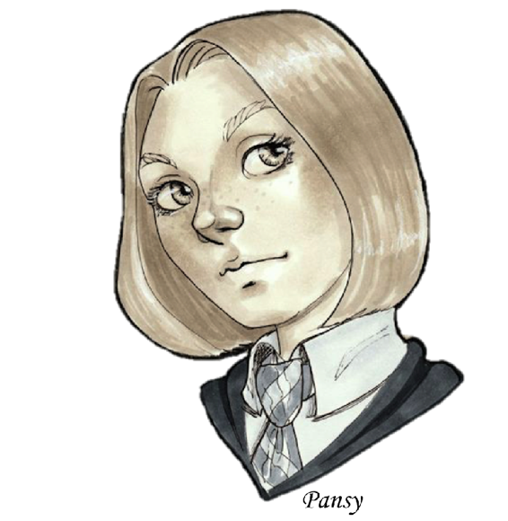

Chapter 7

Enlightening News
“I want to grow my hair out,” Pansy said.
It was November second, and the events of Halloween were still hanging like a specter over everything in the castle. The debris in the third floor had been cleared away quickly enough, and the hallway now bore no signs of volatile activity, but the real horror of the night hadn’t been realized until the following morning, when their Heads of House had informed the students that Neville Longbottom, found at the scene of the attack, had been petrified.
They were assured that he was not dead or dying, and that Professors Sprout and Snape were working together on a restorative, but the fact remained that the mousy Gryffindor would not be returning to classes any time soon.
It was like the sickness all over again, except this time it didn’t take months for the castle to slowly fall into a state of despair. Only hours after Neville’s fate was common knowledge, the inhabitants of Hogwarts were already knee-deep in the quagmire of fear and helplessness, whose weight they had become so accustomed to the previous spring.
To escape the all-too-familiar flavour of depression in the castle air, Draco, Pansy, and Rigel had headed out to the lake after classes. Now they were bundled against the cold November wind, gazing out over the still water and talking about as many inane things as possible to keep their minds off of Halloween.
“What for?” Draco asked mildly, flicking his eyes over Pansy’s layered bob, “It looks fine like it is.”
“Although it would be easier to tell the two of you apart if she did,” Rigel commented teasingly.
“Take that back!” Draco said, scowling, “I do not look like a girl.”
Rigel feigned surprise, “Who says that’s what I meant?”
“It better have been what you meant,” Pansy sniffed, “As the alternative is the implication that I look like a boy.”
Rigel winced, “Sorry, Draco, I guess you’re just effeminate.”
Draco huffed, “Like you can talk. Your little vegetarian frame is so tiny a pixie could knock you over just by flapping its wings.”
Rigel privately thought Draco had a rather annoying tendency toward hyperbole. Her morning exercises over the past few months had been slowly paying off, if she did say so herself. She could now run twice around the lake (though barely) each morning, and the number of sit-ups and push-ups she could do each day had increased twofold as well. She had also, as an extra challenge to herself and to give her something to do when she had a moment of down time, taken to carrying the balled weights around in her pockets. It built up her stamina over time, while also giving her something to squeeze when she was bored or even frustrated with something.
All in all, she was above the average health and fitness level for a twelve-year-old boy, so she felt Draco’s teasing to be groundless, and treated it as such.
“Just because I don’t look like Crabbe and Goyle, doesn’t meant I’m some pale, sickly academic who gets winded by a flight of stairs,” Rigel said, rolling her neck lazily in a thoroughly unconcerned sort of way, “You don’t see me keeling over during Quidditch practice, do you?”
Draco gave a mock shudder, “Wouldn’t blame you if you did, Rye. Flint has been especially brutal this year. If we don’t beat Gryffindor next week, I don’t like to think what he might do.”
Pansy shook her head, “You boys are so crazy. Why do you put yourselves through that for the sake of a game?”
“Since I can think of no answer that would satisfy you, let’s change the subject,” Draco said, “So why do you want to grow your hair out?”
Pansy only shrugged, “You two probably wouldn’t understand, but long hair is a rite of passage, you could say, for women.”
“Always knew femininity was a cult,” Draco drawled.
Pansy shook her head, smiling, “Long hair, if it is well-kept, is a sign of maturity. It shows that you have the patience and self-possession to take care of yourself.”
Rigel raised an eyebrow, “Isn’t there a spell to grow out long hair? How can it be a sign of patience for witches?”
Pansy chuckled, “Oh, Rigel, those spells are absolutely taboo to any girl who takes her appearance seriously. The enhanced growth rate strips the hair of nutrients and makes it lank and brittle. There are also studies suggesting that using growth spells too often causes hair to grey faster.”
Rigel tilted her head to the side, “I didn’t know.”
“Or care,” Draco yawned, “No offence.”
“None taken,” Pansy said sweetly, “As long as you aren’t offended when I say I couldn’t care less about Quidditch.”
“So, moving on from both topics,” Rigel began, but before she could finish the thought a pair of hands snuck around her head from behind and covered her eyes. She froze, assessed the situation, and said, “Hello?”
“Guess who.”
Rigel paused as she attempted to identify the voice by cross-referencing the general sound of it against the list of people she knew who would do something like this. She came up blank.
“I don’t know,” she said, “Millicent?”
The person behind her, who she was pretty sure was a girl, laughed, and used their hands to move her head back and forth in the parody of a negative shake, “Not even close. Think Gryffindor.”
Rigel could count on one hand the number of Gryffindor girls she’d ever talked to, and have a couple of fingers left over.
“It’s Weasley’s little sister,” Draco supplied, tone a bit sharp.
The hands disappeared and Rigel opened her eyes to see Ginny Weasley pouting playfully at Draco, “Oh, go and ruin it then.”
“It wasn’t that funny anyway,” Draco said dismissively, “What do you want?”
Rigel turned expectant eyes on the young Gryffindor, rather curious herself at Ginny’s presence.
“Fred and George sent me,” Ginny said easily, not seeming the least bit affected by Draco’s cool demeanour, “They want their notebook back, and when I asked ‘what notebook?’ they told me you’d know what they meant.”
Rigel’s eyes widened, “I forgot. Yes, I have it back in my dorm room. Do they need it right now?”
Ginny shook her head, sending red hair floating about her shoulders, “Tomorrow is fine, or later tonight if you aren’t busy.” Ginny then turned to Pansy, who had been noticeably silent until that point, and said, rather bluntly, “You can talk to me. I know we haven’t been properly introduced, but don’t feel like you have to uphold propriety in the face of my blatant disregard of it. Unless you just have nothing to say, in which case, forget I said anything.”
Pansy blinked slowly, then smiled politely, “It is a pleasure to meet you, Ginevra Weasley.”
“Ginny,” the redhead said flatly, “Please, if you’ve a merciful soul, call me Ginny.”
“Then you must call me Pansy,” the blonde girl said, smiling a bit wider, “You have beautiful hair, by the way.”
Ginny made a face that was a cross between a grimace and an ironic grin, “Thanks. I’ve always wanted short hair like yours, but my mum makes me keep it long. Something about being sick of shorn-haired children after six boys. It’s a real pain, though.”
“Okay, well, you’ve delivered your message,” Draco said, trailing off deliberately with an implied, “so you can go now” tacked onto the end.
Ginny smirked, “Thank goodness, too. Now with the business out of the way I can just hang out with you guys for a few hours.” At the sour look Draco wasn’t quick enough to suppress, she laughed, “Keep your cloak on, Malfoy, I was kidding. See you all around. Bye, Rigel.”
Rigel murmured a polite goodbye in response. When Ginny was out of earshot Draco turned to her and scowled.
“Since when are you on such good terms with the Weaslette?” Draco asked.
“We’re not on that good of terms,” Rigel said, ignoring the slight for no other reason than that it would take more hours in the day than she could spare to curb Draco of his automatic disdain for the Weasley family, “I’ve only met her a couple of times.”
“Well she was awfully grabby for someone you barely know,” Draco said, eyes narrowing just a tad.
Rigel shrugged, “She probably did that to annoy you more than out of genuine playfulness. The only thing I know about Ginny Weasley is that she’s blunt, independent, and probably tougher than all her brothers put together.”
“Headstrong chit,” Draco muttered, “Gets it from the Prewetts, no doubt.”
“Nothing wrong with an independent woman, is there, Draco?” Pansy poked his shoulder, “After all, among the headstrong women I know I’d have to say Narcissa ranks number one.”
“Or maybe he just has a thing against red hair,” Rigel added thoughtfully, “Which would be a shame, as my Aunt Lily has red hair, and I had so hoped to introduce you to her at some point.”
Draco shook his head quickly in the face of their expectant expressions, “No, no, just making an observation about the girl. So we are going to meet your family then, Rye?”
Rigel hesitated, “I—yes. I just haven’t worked out when exactly.”
“Well, work it out” Pansy said, “My father especially wants to talk to your father, I believe.”
Rigel raised an eyebrow, “Is he going to threaten my father’s life and limb in the event that our friendship ever turns sour?”
Pansy smiled angelically, “Probably.”
“Oh, good,” Rigel said, “That will be pleasant.”
Pansy laughed, “Don’t worry so much. Our parents know how to at least pretend to be nice to people they don’t much care for, so if worst comes to worst it will be an exceedingly polite meeting.”
Rigel grinned, “Yes, except you’re forgetting that my dad doesn’t get more polite when he’s faced with something he doesn’t like. Quite the contrary.”
Draco shook his head, “Too bad. You’re not getting out of this, so stop worrying about it and arrange it.”
“Okay, I’ll write them a letter.”
*
The next morning, Rigel received a letter from home in her scrambled eggs.
“That was fast,” Draco said, grinning.
Rigel tilted a smile back, “Yes, didn’t you hear? My family is psychic, so letters are actually just a formality.”
It was from Sirius, so she opened it right there and started to read, curious as to why he was sending her a letter when she’d just got one the week before—despite Draco’s teasing, there was no way he’d got her letter from the previous evening yet.
Dear Squirt,
I know I just wrote, but this is different, so don’t go thinking I’ve gone all clingy and desperate for my kid’s attention, because it’s just not true at all, no matter what Moony mutters under his breath.
I have some news—well, it’s not really my news, but Lily said I could tell you anyway. Don’t be mad at me for not telling you sooner either—I just found out myself! Harry’s known for a while, of course, but she never tells us anything, and Lily and James wanted to keep it “among the Potters” until it was certain.
I know you’re glaring at the parchment right now and demanding I stop beating around the bludger, so here it is.
Aunt Lily is having a baby.
I know, right?! James said he suspected for a while, since she used to crave ice mice when she was with little Harry, but Lily didn’t want to say anything until she was sure she could carry to term. She’s been showing for a couple of months now, but I honestly thought she was just getting a bit fat. PLEASE don’t tell her I said that. Maybe I should destroy this letter… naw, too much work.
Anyway, they told Harry as soon as they were sure, to give her time to get used to the idea of being a big sister before everyone else found out. Apparently she was very enthusiastic and supportive in her letter, which is a rare thing in itself for your cousin, so I gather she’s thrilled to have a baby sibling on the way. So that’s the “big news” around the home front. How’s Hogwarts? You aren’t the top of your class are you? Because if you get to that point it means you’re working far too hard for someone so young and carefree.
Can’t wait to see you for the Holidays. Moony sends his love, as do James and a decidedly not-fat Lily. Your Aunt is due in early March, so you probably won’t get to see the birth, unless you can get special permission to leave school, but you will get to see Aunt Lily waddle around the house like a giant creampuff on a pair of duck feet.
With that amusing picture, I leave you,
Your dad,
Sirius
Rigel stared at the letter. Read parts of it again. Put it down, took a sip of water from her goblet slowly, and picked it up again. The words hadn’t changed.
Her mom was having a baby. A little tiny squealing thing with big eyes and little feet and the potential to become a real human being.
She was going to be a sister.
Harry began to smile, a small, but genuine, curve of her lips that softened her cheekbones and relaxed her eyes. She could feel some foreign bit of warmth take root inside of her, and knew, as surely as she knew that she was really a girl, that her little sibling was going to be born with a key to her heart. She liked the idea, she thought. She might be a terrible role model, but her little brother or sister would be loved, at least, and with luck they would never know anything about their big sister that would shame them. She would keep her life as Rigel locked tightly away from the new baby. Yes, she would be the best big sister there ever was for whoever the child ended up being.
“What is it?” Draco said, a funny note to his voice. Rigel glanced up to see him staring at her peculiarly, “You look so… I don’t know. Weird. Different than usual.”
“Almost fond,” Pansy said thoughtfully, “But more like you’re anticipating something fondly… if that’s even possible.”
Rigel’s smile widened a bit further, “I going to be a…” she paused, hesitating, “A cousin again, I guess.”
Draco raised an eyebrow, “What?”
Pansy gasped suddenly, “Oh! Who’s having a baby? Regulus? No, of course not—stubborn bachelor. Bellatrix ? No, that would make you a third cousin, I think… is it someone on your mother’s side?”
Draco’s eyes widened comically, “A baby?” He sounded a bit alarmed, “That’s… wow.”
Rigel laughed softly, “I know. It’s my honorary aunt, actually, although I am related to the Potters somehow.”
Pansy’s mouth made a little “o” shape, “The Potters are blessed with a child, then? Oh, you must be so excited. Does Lady Potter know when to expect the baby yet?”
“March,” Rigel said, glancing over the letter yet again, “No mention of boy or girl, though.”
“A lot of women like to keep it a surprise,” Pansy said, “Oh, Rigel, that’s so wonderful! I bet your cousin is excited to be a big sister, too.”
Rigel smiled again, “Yes, I daresay she is.”
For the rest of the meal, she was lost in thoughts of all the things she could teach to a baby brother or sister—once they’d learnt to read, of course, though she supposed they wouldn’t have to be able to read labels if she just taught them what the different ingredients looked and smelt like… Rigel caught herself smiling again when Draco gave her another strange look and quickly schooled her face into a more appropriately thoughtful one. She shouldn’t look that excited; after all, Rigel wasn’t the one getting a sibling.
After breakfast she headed off toward Gryffindor territory to finally give the twins their notebook back. She was just about to take the secret stairway from the third floor when she spotted Ron walking up the corridor from the other side. Judging by the frown on his face and the red-marked essays he held in his hands, he’d probably just come from Flitwick’s office. She vaguely recalled Ron having trouble with Charms class as far back as their first week of the class. Then again, she couldn’t talk, considering her own poor performance during that time.
“Hi, Ron,” Rigel said, drawing the boy’s attention from his parchment.
“Oh, hey, Rigel,” Ron said, rolling the essays up and tucking them away, “What’s up?”
Rigel fished the worn leather notebook from her pocket and held it out, “Would you mind returning this to your brothers for me?”
“Yeah, sure—wait.” Ron peered at the notebook with a look of sudden apprehension, “Is that what I think it is?”
Rigel thought his phrasing was a bit dramatic, since he’d been there when his brothers had given it to her, “Yes, it’s George’s notebook. The one he leant to me on Halloween.”
Ron shook his head quickly, “Sorry, Rigel, no can do.”
Rigel frowned, “Are you not going back to the tower?”
“No, I am,” Ron said, “I’ll walk you up, even, but no way in Wizardom am I touching that thing.”
Rigel looked from the innocuous notebook to Ron and back, “I haven’t cursed it, you know.”
Ron laughed a bit humourlessly, “I’m sure you haven’t. You don’t know how vindictive those two can get with their things. Especially those notebooks. Not even Mum will touch them after what one of them did to Bill—and he’s a curse breaker! We thought if anyone could handle the things…” Ron shuddered, “Sorry, but no thanks.”
Rigel thought Ron must have a good reason to be afraid—no one could fake that kind of horror—but felt the need to point out, “Even if it was jinxed, they must have deactivated it before giving it to me—otherwise I couldn’t handle it, could I?”
Ron shook his head determinedly, “For all I know it’s specifically warded against family members. In fact, that would make sense, considering no one else would be dumb enough to try and steal from the twins. You keep it. George wouldn’t want you trusting it to anyone else, anyway.”
Rigel raised an eyebrow, “There seems to be a discrepancy between what you think this notebook is and what it actually is. Do you think it contains some twin-coded secret documents or the details of all their pranks? It’s just a message-sending notebook, and as far as I can tell, the message disappears as soon as you write it. Besides, they handed it over to me without batting an eye on Halloween, so they must not be too worried about what’s in it. I mean, how important is a notebook full of—”
“Don’t tell me!”
“—empty pages…” Rigel raised an eyebrow as Ron cringed.
“No more, I don’t want to hear what’s in there, even if it looks like empty pages to you. Wouldn’t put it past the twins to obliviate me…”
Rigel wisely refrained from smiling with amusement. Either the twins were much crueler to their family than Rigel thought, or they had done an extremely thorough job of psychologically conditioning their younger brother to fear their ire like one might fear the wrath of a vengeful god. Either way, maybe she should return the notebook herself.
“Okay, I’ll hold onto it until we get to the common room,” Rigel said, “Shall we?”
They trekked up to the Griffin’s Nest, making casual conversation about classes and whether Neville’s condition had changed at all. On their way past the sixth landing, they saw Filch tacking up posters with a moving picture of his cat on them and the word MISSING in large letters across the bottom.
Ron snorted darkly once they were out of the caretaker’s earshot, “As if we don’t bloody well know what she looks like. Evil thing.”
They reached the tower soon after, and Rigel politely hung back so that Ron could whisper the password.
“Fred! George! You in here?” Ron called as they entered.
Rigel glanced around but didn’t see the twins anywhere. A girl Rigel thought she recognized from the Gryffindor Quidditch team stood from one of the armchairs by the fire and said, “Oi! Weasley! Over here.”
Ron, apparently used to being shouted at by his last name, obediently trotted over toward the fireplace, Rigel trailing more slowly behind him.
“Hi, Angelina,” Ron said, “Seen my brothers around?”
“Yeah, they’re still upstairs,” Angelina said, “Haven’t left their dorm room all morning. If I were you, I’d leave well enough alone—no telling what they’ve been up to, but you sure as shoot don’t want to be the first to find out.”
Ron grimaced, “No kidding. Thanks for the warning.”
“Anytime, kid,” Angelina said, shrugging, “Merlin love those two, but they should come with a proper label.”
“And a pair of cow bells for good measure,” Ron muttered in agreement.
Rigel shifted somewhat awkwardly, “Well, could you give them this back for me?” she asked Angelina, holding out the notebook once more, “You’re teammates with them, right?”
Angelina took one look at the innocent leather notebook and shivered before making an old folk-sign for warding off evil across her chest. Rigel couldn’t tell if she was joking or not.
“No way, no how,” the older girl said firmly, her dark hair whipping about as she shook her head quickly, “Sorry, kid. I don’t do suicide missions.”
Rigel wanted to sigh. Why were Gryffindors so dramatic? “Never mind, then. Which dorm room is theirs?”
“Listen, you really don’t want to do this,” Angelina said, looking concerned, “Really, it would be best to wait until another time.”
“Their sister said they wanted it today,” Rigel said, “And I don’t know when I’ll have another half-hour free to visit your common room.”
Angelina looked ready to argue, but Ron just shook his head ruefully, “They’re up the third staircase on the right of the fireplace, second landing. Knock first.”
Rigel nodded even though she privately thought that Ron must not think much of her intelligence if he thought she was that stupid. She approached the correct staircase and momentarily hesitated. What if in the Gryffindor common room, the boys’ dorms were spelled against girls in addition to the girls’ being spelled against boys? She shook off her misgivings. Probably all the dorms were designed with the same kind of precautions in mind, and if they weren’t, she’d play it off somehow.
After a few steps without something horrible happening to her, she proceeded more confidently to the second landing. The door looked… ordinary. There wasn’t anything to suggest something dangerous or unstable was lurking behind it. No suspicious smells or wisps of smoke leaking through the hinges, so that was a good sign.
She knocked gently on the wooden surface. No answer. She knocked again, more sharply. As she waited, she glanced over her shoulder to see Ron and Angelina looking up at her with apprehensive expressions on their faces. She heard the door open behind her, but before she could turn back around two hands grasped her shoulders abruptly and jerked her into the room. She felt her neck protest as she swung it around despite the speed at which the hands were insisting she travel through the doorway. A moment later, the door slammed shut behind her and she stumbled forward a bit as the hands that had pulled her in let go.
Blinking, she looked up to see George smiling at her from over a large simmering cauldron and Fred moving back to where he’d apparently been chopping up ingredients on a rather nice fold out cutting board before he’d grabbed her from the landing.
Their dorm room was… interesting. They seemed to have the place all to themselves, as there were only two beds, and Rigel thought Jordan had probably roomed with them before… well, before. The beds were pushed next to each other on one side of the room, and on the other side they had quite a set up. Several cauldrons of various sizes, stacks of notebooks and scrolls of parchment, a stand-up black board that was covered with various scribbles that only vaguely resembled the rune configurations she was familiar with from her spotty Ancient Runes education, and even a large dustbin full of odds and ends with a large “FAILED” sign hanging off of it.
Now that she was further in the room, she could detect the telltale smell of a heated cauldron, and guessed they had put up fumigating spells by the door to keep the scent from leaking out.
“Hiya, pup,” Fred said conversationally as he chopped, as though they were doing nothing unusual, brewing a potion in their dorm room and pulling people randomly inside without notice.
“Hi, Fred,” Rigel said slowly, “What are you two making?”
“Can’t you tell?” George waggled his brows teasingly as he paused in his stirring to wipe at his forehead.
Rigel took that as a challenge, and stepped closer to the cauldron. After several minutes, she still couldn’t place the bright orange concoction among any of the potions she’d studied. She looked at the ingredients lined up on Fred’s cutting board and then at the labels on the empty packages already discarded. She frowned.
“It looks like something to quell a stomach ache,” she said slowly, “But the sheer amount of suppressants you have… it would have to be one seriously upset stomach. I don’t think I’ve ever seen this combination, though. Is the potion artificially coloured to look that… orange?”
George grinned, “So you think it will work to stop vomiting? Good, that’s what it’s supposed to do.”
“And you’d better not have seen it before,” Fred said, also grinning, “Seeing as we invented it. Do you like the orange? It was my idea.”
“Is it a children’s potion?” Rigel asked, guessing that kids would be more willing to drink something orange than brown or grey.
“Sort of,” George said, “It’s actually for a joke product, but, yes, eventually we hope to market to children.”
“Oh,” Rigel said, nodding, “You guys are going into the joke business, then? Good choice—I’m sure you’ll be successful.”
“You don’t mind?” Fred asked, eyebrows rising, “We are kind of muscling in on your family’s area of expertise.”
Rigel smiled, “Honestly? Dad and James could use the competition. You guys will definitely keep them on their toes.”
“High praise indeed!” Fred said, beaming.
“Fred, the bombasweed,” George said.
“Right,” Fred grabbed a bowl with crushed leaves in it and sprinkled the contents into the cauldron, “So, you’re not going to give away our secrets, are you?”
Rigel raised an eyebrow, “A bit late to be asking that now, don’t you think?”
George grinned, “Naw, we know you wouldn’t.”
“And how do you know that?” Rigel asked curiously.
“Just do,” George grinned. He grabbed a lid from a drying rack by the window and set it carefully over the cauldron before turning the flame down to a low flicker, “So, what brings you here?”
Rigel pulled out the notebook, “Your sister reminded me to give this back.”
George wiped his hands on his brewing apron and stepped forward to take it from her, “Thanks. We’re so used to having these that it was a weird couple of days without it.”
Fred laughed, “Yeah, how long’s it been since we actually had to pass notes in class?”
“Too long,” George said ruefully, “McGonagall nearly caught us yesterday.”
“Is that all you use them for?” Rigel asked.
George grinned, “You’d think that, since as soon as you write in it, it disappears, right? Well, these beauties are actually quite a bit more useful.”
Fred nodded, “They keep everything ever written on record unless we manually delete something, but no one except the notebook’s owner can access it—well, that’s not entirely true, I suppose. I can access Forge’s, and he can do mine.”
Rigel cocked her head, “Because you’re twins? Does it recognize DNA?”
They shook their heads.
“Then anyone could get into one by just having our hair,” George said, “No, it takes the correct magical signature. It’s not really that we’re twins, because even twins have slightly different magical signatures, but because they’re so similar, Fred and I can tweak our own signatures to match one another.”
Rigel considered this, “It’s supposed to be impossible to imitate another’s magical signature.”
“It’s supposed to be impossible to bypass Occlumency barriers via magical cores, too,” George said pointedly, “A lot of things people say are impossible aren’t. They’re just difficult, or can’t be done by everyone.”
Rigel nodded, “Yes, I suppose you’re right. I wonder if family members would be similar enough to do the same thing, or if it has to be twins. And is that the same skill Fred uses to learn a spell by mimicking exactly George’s magical output, or is that different?”
Fred thought about it, “I’d say it is almost the same. When you cast a spell, your aura reflects the magic you’re currently using. That’s why people who are really good at aura-reading can always tell if someone is using a glamour or under the influence of protection spells and the like—you can read current magic usage straight from the person’s aura. Since the aura is linked to the unique magical signature of a person, to change one is almost like changing the other.”
“They aren’t the same thing?” Rigel clarified.
“Not really,” George said, “It’s like the difference between a person’s fingerprints and what their fingers are doing. Like, if you had the ability to mimic a flute player’s movements exactly, you could learn to match the finger-movements with the sound produced, and theoretically learn a piece of music without even learning to read music, or even without knowing what the notes were. You don’t have to have the same exact fingers to mimic like that, but it would be harder to do if the fingers you were imitating were a different length than yours, or had different amounts of flexibility or dexterity, and when your fingers played the instrument, they would still have your own fingerprints.”
“It sounds possible for people with completely different magical auras to do the mimicking thing, though,” Rigel said, “As long as they had the magical ability.”
“That’s true,” Fred said, “But an aura is much more complicated then a set of fingers. Most auras are so different that figuring out which areas to match up with to do what magic is a nightmare. Forge and I have nearly the same magical signature, so as long as other variables stay the same, our auras are almost always the same. If one of us is doing magic, the only thing different in his aura is what changes to produce the magic, so that’s all I have to change in my own magic to match it. If it was someone else, so many things would be different that only an aura master would be able to tell which things to try and copy.”
“And even then,” George continued, “You may not be able to copy a lot of the aura. If you have a fire-core, for instance, your magic is going to form spells differently than a water-core would. And that’s not even getting into Light and Dark and Neutral alignments. Honestly, it would be less work to just learn the spell.”
Rigel nodded, “Still, it’s an interesting kind of magic. I looked into magical signature study once for a potion I was working on, but I never got far into auras.”
Fred left off the notes he was jotting down about the orange substance and went to rummage through a stack of books under one of the beds. He emerged with a thick but well-kept book, which he handed to her, “Here—everything you want to know, and a good deal of nonsense you’ll never need to know, about auras.”
“Does it talk about how to influence your own aura?” Rigel asked. She was very interested to see if there was a way to fool aura users by tweaking with one’s aura, or, in her case, if it was possible to consciously project one so that she didn’t give herself away every time someone like Snape sensed someone without an aura around.
“Only in a very vague and abstract kind of a way,” George said, “When you get that far, come talk to us—we can at least get you started.”
“Thanks,” Rigel said absently, already skimming through the table of contents.
George laughed and put a hand on her shoulder to steer her toward the door, “Go on and read your new book then, pup. See you later.”
Fred held open the door and Rigel glanced up briefly to say goodbye to the twins, and to thank them for the book. They waved her off, and she descended the stairs to the Gryffindor common room once more.
“So you’re alive,” Ron said, glancing over her, “And no extra limbs. That’s a good sign.”
“Or a very bad one,” Angelina said, “Maybe his injuries are internal.”
They broke out into amused laughter and Rigel just shook her head, “Those two have really got you running scared.”
“Better to run scared than to be caught unaware,” Angelina said pragmatically.
Smiling but not disagreeing, Rigel said goodbye and headed back to her own common room to get started on the first chapter of aura reading.
*
She went to visit Neville in the Hospital Wing briefly later that afternoon, but there was only so much she could stare at her friend’s unanimated form before it became too depressing for her to bear. She knew, logically, that his current state was virtually harmless—in fact, petrifaction was about the safest form of suspended animation there was, magically speaking.
Still, there was some instinct, perhaps left over from some proto-human ancestor who didn’t understand the theory behind magical comas, which gave her a feeling of extreme disquiet in her gut at the sight of Neville lying so motionless on the Hospital bed.
After deciding there was nothing she could do for her friend—for now—she went back to the Slytherin common room to get some studying done. It was becoming a regular thing for her to meet up with the other Slytherin second years and get some of her legitimate homework done, or at least read quietly in their company. She hadn’t realized how distant she had been from her fellow classmates the previous year, but the more time she spent with them, the more things she realized she didn’t know about them.
She wasn’t just learning personal tidbits, though. As she spent more time with her classmates she realized that they all had different areas in which they were more or less proficient, and that most of them were always eager to trade knowledge for knowledge.
Earlier that week, Millicent had given them all a run-down on foreign policy in the Wizarding World. Her uncle was an important diplomat, apparently, and she knew the who’s who of the International Wizarding Confederation quite intimately.
The week before that, Theo had demonstrated exactly what being fluent in Latin could do for a person’s understanding of spell-craft. He could dissect a spell in under a minute and tell you exactly why a certain incantation was used and then give a list of all the possible mispronunciations and their consequences.
That night, they had all more or less settled into their various assignments when, seemingly out of the blue, Theo asked, “Why is your hair black, Rigel?”
Everyone paused momentarily to gaze incredulously at Theo.
“All the Blacks have black hair,” Millicent said slowly.
“Well, yes,” Theo said, “But don’t they usually marry other black-haired witches? But Rigel’s mum was a blonde, wasn’t she? Shouldn’t Rigel be some mix of the two? And why does Draco’s mum have blonde hair? I mean, it’s been bugging me for a while, because, like you said, all the Blacks are black-haired.”
Draco sighed, “If I tell you, will you never bring up my mother’s looks in conversation ever again?”
Theo thought about it, “I can’t think of why I would.”
“Okay, then,” Draco said, “It’s really quite simple—pureblood genetics.”
He went back to studying as if that explained everything, and to anyone who had studied pureblood genetics, as Rigel had, it actually did. Theo wasn’t quite satisfied, however.
“What’s that supposed to mean?” he asked.
Blaise took up the explanation with a gleam of interest in his eyes, “It means that in the very old pureblood families, genetics work quite a bit differently than in other families. All Blacks have black hair for the same reason all Malfoys have blonde hair, and all Weasleys have red hair—with very few exceptions. It goes back to ancient times when our ancestors first harnessed the wild magic and gave it shape. They were just druids back then, but they gradually learnt to tie the magic to their souls and create a core that they could tap into in lieu of tapping into the wild magic when they wanted to access their power swiftly and conveniently.
Once they managed to bind magic in general, they also began specializing—this is the origin of magical gifts like metamorphing and foresight. As different families unlocked the secrets to tying certain abilities to themselves, they also developed a method for passing that ability to their offspring. The knowledge is partly lost to us now, but it involved elaborate rituals for ensuring the transference of magic from one generation to the next, and a large part of it was focused on preventing the dilution of the magic.”
“Dilution?” Theo asked.
“Yeah,” Millicent chimed in, “Because the thing about the magic we use is that it wasn’t always ours. Our ancestors shaped it and bound it to their lines, but the magic remembers being free. Shaped magic is always trying to get free again, which is why intent is so important in spells—given half a chance, the magic will dissipate once freed from our cores without doing anything. So if the ancients hadn’t bound the magic into their very souls, it would have been freed upon their death.”
“But magic is freed upon a wizard’s death,” Theo said, “It gets released into the earth.”
“Yes, but when a witch has a child—or I suppose even when a muggle gets pregnant from a wizard—the magical parent essentially donates a portion of their magic. I mean, not the magic that they use regularly, but a piece from the very heart of their core. A piece from the part of the core that regenerates the magic we use,” Millicent said, “So while the baby grows, that small bit of donated magic grows and develops until the baby has its own magical core. So the magic gets passed on.”
“But, what does that have to do with the colour of hair?” Theo asked.
“It’s related to the measures the ancients took to make sure magic didn’t get spread and muddied among the future generations,” Blaise said, “They were afraid that if their traits and abilities mixed too much, they would mutate or get watered down. So they warped their own genetics a bit in order to make sure that only the undiluted magical talents would get passed on.”
“How?” Theo asked, sounding both curious and slightly disturbed.
“It’s basically an all-or-nothing deal,” Millicent said, “They bound the magic in a way that forces it to select or deselect for traits completely—no half measures, and no strange hybrid traits. That’s why there’s never been a Metamorphmagus who could only change his hair colour but not his eyes, and why you’ve never heard of a natural Occlumens whose shields were only so-so. The magic tied to the blood creates a this-or-that kind of genetic system. So you’re either a Seer or you’re not, and you’re either a ghost-speaker or you aren’t.”
“It had an interesting side-effect, though,” Blaise added, “Because it doesn’t apply to just magical traits. It effects physical characteristics, too. So if you’re part of the Black family you’re either going to have completely Black hair, or you aren’t. No mixing. Same with the Malfoys and the Weasleys and countless other families. If it wasn’t part of the magic’s design, all the pureblooded families would look the same by now after so many centuries of interbreeding. On the contrary, however, each family is still quite distinctly unique. The process of inheritance is greatly skewed in favour of the dominant traits in each family, obviously, but there are recessive traits that run just as strongly in families, just not as often. So every few generations you get a Black like Narcissa Malfoy, who is completely blonde.”
“The Malfoys hardly have any recessive traits,” Draco put in, a bit smugly.
“That’s true,” Pansy said, nodding, “If you go into the Malfoy portrait gallery, it’s like looking at the same person painted a hundred times over.”
They all laughed a bit.
“That makes sense now that you say it,” Theo said, “Everyone I know looks almost exactly like one of their parents.”
“Not me,” Pansy sighed, “I got a couple of recessive Parkinson traits.”
“How would there be any recessive traits, though?” Theo asked, “Shouldn’t they have disappeared after the first generation of magical influence?”
“No,” Blaise said, “Because all of the recessive traits some families have were once dominant traits in another family. When witches marry into other families, magic generally favours their husband’s traits in their offspring, but the dominant traits from her family don’t go away—they get ‘saved up’ over time until eventually they manifest completely in a random descendant. That’s why most purebloods look so exotic. We all have extreme features, because they remain as undiluted as our magical gifts. That’s also why we’re called ‘purebloods;’ Because the traits in our blood are passed down in their entire, pure, form. Nowadays most people treat it like a moral title, but originally it just meant that, as long as we’re careful about it, our magic and bloodlines are virtually incorruptible.”
There was a lull as Theo chewed over the information he’d been given. Rigel pretended she was still reading her book on auras, but in reality she was silently contemplating. She hadn’t heard anything new in Millicent and Blaise’s explanations, but somehow hearing it spoken with raw conviction from a twelve-year-old’s mouth was different from reading about it.
She couldn’t dispute most of the points, not being well enough versed in magical theory, but that didn’t mean she agreed completely. There were just too many holes in the explanation.
For instance, if magical children got their magic from their parents, then how did muggleborns come about? She had read theories postulating that when families intermingled too much and diluted their magic, they wound up without enough to support a core in a child, so the child ended up a squib, with a tiny spark of magic, but not enough to be useful. Overtime that spark would grow and a few generations later there would be enough “saved up” magic for it to reassert itself, just like a dominant pureblood trait that is hidden by another, more powerful, family’s traits until it can be expressed fully again.
Still, there were too many squibs born into perfectly pureblooded families for that to make sense. Some said squibs were a result of a birth defect, which caused damage to the core in the womb, making it unusable. This damage, they said, would slowly fix itself over time and eventually spawn another magical child—who would only appear to be muggleborn because their line was lost in obscurity.
The other problem she had was with the idea that incorruptible genes were necessarily a good thing. It might be true that the wizards now had the exact same abilities and powers as their ancestors had, pure and not watered down, but it was also true that there were no new magical abilities in the wizarding community since the ancient times. All the abilities were exactly the same, and, as far as she knew, exclusively kept to the old pureblooded lines.
Still, the theory had its uses.
It explained how she had got Parseltongue, for one thing. Someone from the first family of Parselmouths must have married into the Potter family. Since the Potter traits—unruly black hair, rather poor eyesight, and an affinity for flight being a few of the most notable—would be favoured over an outside family’s traits, the parseltongue would have become recessive, biding its time until magic decided to assert the trait fully in her.
From the way Draco was eyeing her, he was probably thinking along the same lines.
Sure enough, when it was just the two of them in their dorm later on, Blaise having gone to the Library and Theo having stayed in the common room to play exploding snap with a few of the first years, Draco said, “So I guess that explains how you got your you-know-what. I didn’t think the Blacks had ever married into the Slytherin family, but maybe someone married in whose family had in turn been married into?” The blonde boy sighed, “It’s so difficult tracing recessive magical abilities through families. I think we’ve both got a cousin who is a metamorph, and that definitely doesn’t run in the Black family. Can’t have been the father’s line, either, because I hear he’s a muggle.”
“Oh, you mean Andromeda’s daughter, Nymphadora?” Rigel asked, “I’ve met her a couple of times.”
“Really? I never have,” Draco said, “Didn’t even know her name, actually. Anyway, I wanted to ask you…” he trailed off, and Rigel turned to look inquiringly at him when he didn’t pick up his train of thought once more.
“What?” Rigel prompted, thinking it was rare for Draco to hesitate in something as simple as asking a question or favour. She could tell he was biting the inside of his cheek softly, like he did when he was deciding whether what he wanted to say or do would be overly rude or presumptuous. “You know,” she added cajolingly, “Whatever it is, I’ll probably agree.” Unless it was a personal question, she amended silently, in which case she’d probably lie.
Draco seemed to decide something, and said, “Wherever you go in the mornings—”
“I go exercising,” Rigel reminded him.
“Yes, that,” Draco said, “May I go with you tomorrow morning?”
Rigel blinked, “You want to take up extra workouts as well? Are you sure?”
Draco shrugged, “I just thought I’d see… maybe I won’t like it, but I won’t know until I try, right?”
Rigel smiled slowly, “I guess that’s true. All right, I’ll wake you up, then. You might want to set out some of the clothes you wear to Quidditch practice tonight so you don’t have to rummage around in the dark tomorrow morning.”
“Okay, thanks, Rigel.”
Don’t thank me yet, she thought wryly.
*
Despite her reservations, Draco did admirably the next morning—far better, in fact, than she had done the first time Remus put her through her paces. He awoke with barely a grumble, which was positively sunny compared to his usual pre-breakfast demeanour. He followed her diligently out of the castle and around the lake, though he sat the second lap out to catch his breath. He kept up all through the weights training, though it took longer than usual as they had to split the weights between them. His flexibility was moderately good as well.
After they finished with sit-ups, push-ups, and a general cool down, Draco gulped gratefully at the container of water she’d brought out with them and said, “And you do this every morning?”
“Unless something else comes up,” Rigel said, wiping a sheen of sweat from beneath her bangs.
“How often does that happen?” Draco asked.
“Well, it hasn’t yet,” Rigel said, conveniently forgetting about the time Blaise had helped her with the wind chime prank, which had taken too long to go running afterwards, “But you never know.”
Draco just shook his head, “So, what next?”
“That’s it,” Rigel said, shrugging, “Now we can get cleaned up for breakfast.”
As there were two bathrooms in their dorm room now, it didn’t take them long at all to get showered and changed for the day.
They met Pansy in the common room, who said, “You’re looking a bit flushed this morning, Draco. And your hair is wet—don’t you usually shower in the evening?”
Draco grinned, “I tagged along with Rigel this morning. Did you know he runs around the lake twice every morning? And that’s just to start!”
Pansy raised her eyebrows, “Really? Are we exercising now as well?”
“We?” Rigel and Draco echoed.
Pansy sighed, “Well, of course. Don’t even think of saying it’s a boy thing. If the only way to make sure I’m not left behind is to learn to keep up, then I will. What time did you leave?”
Bemused, Rigel told her.
“I’ll be here tomorrow morning, then.”
After making sure Pansy had appropriate running attire—"I’ll borrow something of Aldon’s,"—they headed to breakfast.
After breakfast, Draco silently accompanied her to the common room couch and joined her in reading quietly for twenty minutes or so before classes.
Later when she started to slip away during the lunch period, Draco was there at her elbow, “Where are we headed?”
Rigel glanced sidelong at her unusually present friend, “I was going to visit Binny in the kitchens, actually.” When Draco said nothing but looked at her expectantly, she felt like sighing, but said, “Would you like to accompany me?”
“Love to,” Draco said, falling into step beside her.
Binny was as solicitous as ever, and clapped her hands with glee when she saw Draco there with Rigel, “Oh! Young Sir is bringing his friend Mister Draco! This is being lovely. Come, sit here, I is getting you your usual.”
“Ah,” Rigel said quickly, “Actually I thought I’d try something new today.”
Binny turned big eyes on her solemnly, “You is not liking your usual?”
Rigel shifted a bit uncomfortably under the combined pressure of Binny’s mournful gaze and Draco’s curious one, “It’s not that, I just thought I’d like a change…” she trailed off weakly. She hated upsetting the elf, but Draco wasn’t to know she ate meat now.
“But you is always getting the veggie salad!” Binny said dramatically, “And I is cutting up strawberries for you already!”
Rigel blinked, waited a moment for her brain to catch up, and suppressed a smile. Binny really was the cleverest house-elf she’d ever met. She must have remembered that Rigel had said her meat eating was a secret, and decided to put on a charade to fool Draco into thinking exactly what Rigel wanted him to—that her diet hadn’t changed at all.
“Well, if you’ve already gone to the trouble,” Rigel said ruefully, “giving in” at last, “Of course I’d love my usual. I just wasn’t sure Draco would enjoy the salad.”
“Oh, I’ll have whatever you’re having,” Draco said easily, and he proceeded to do just that. As they ate, Binny chatted to them about castle gossip as she worked—thankfully in English, as Draco was also not supposed to know she was learning French until she could speak it passably. Toward the end of the meal Rigel saw Draco eyeing a strawberry tart longingly, so she asked Binny for a couple, inwardly wondering why Draco seemed determined to only eat what she ate. Maybe he didn’t know which foods it was okay to eat, and thought the elves needed all the tarts to send up to the Great Hall?
After their afternoon classes, Draco walked all the way up to the Library with her when she needed a book for a homework assignment, but didn’t check out anything for himself. He conversed with she and Pansy for a couple of hours in the early evening, which was nothing unusual, but when she got up intending to brew for a few hours before bed, he got up as well, trailed after her as she went to pick up her ingredient kit from her trunk, and then followed her all the way back out until they reached the common room entrance, at which point she couldn’t ignore it any longer.
“Draco, don’t take this the wrong way, but… what are you doing?” she asked.
“I don’t know,” Draco said, “Whatever you’re doing now, I guess. Aren’t you going to brew?”
“I meant to ask, why are you following me everywhere today?” Rigel clarified.
“Oh,” Draco said, “Well, and I can’t believe it’s taken you this long to ask by the way, I decided to spend a day doing what you do. My mother always says you don’t know a person until you’ve lived their life for a day, and I thought that since we’re friends I should know what your daily schedule is like, at least.”
Rigel quirked her lips with amusement, “Did you discover anything interesting?”
“A few things,” Draco said vaguely, “But the day isn’t over yet. After you.”
Rigel inclined her head agreeably and led him to her personal lab. She hesitated at the door, “I’m actually not sure if Professor Snape will let me have you in here. It was sort of one of the conditions for getting a lab in the first place.” So was only brewing the potions Snape had approved on his list, she added to herself silently, but Snape didn’t really need to know about the work she did for Krait. “We should ask him first.”
Since Snape’s office wasn’t too far away, they were soon knocking on the solid wood door.
“Enter,” their Head of House’s voice came briskly through the door.
Rigel and Draco both greeted their Head of House politely when he raised his eyes to see who had interrupted his marking.
“Mr. Malfoy, Mr. Black,” Snape nodded to each of them, “Good evening.”
“Evening, Professor,” Rigel said, “I wanted to ask if you’d give Draco permission to observe my brewing tonight.”
Snape looked between the two of them consideringly, “Only for this evening? And he won’t assist or attempt to take part in any way? You will provide him with appropriate safety wear if necessary?”
Rigel nodded to each question in turn.
“Very well,” Snape said, “No later than nine o-clock.”
“Yes, sir,” Rigel said, “Thank you.”
They walked back to her makeshift laboratory, Draco grinning and Rigel glancing at Draco with concealed amusement whenever his excitement got the better of him and made him bounce on his toes.
“It’s not going to be as exciting as you seem to think,” Rigel warned him, “Especially since you can’t help. You’ll just be sitting there, for hours if you stay the whole time.”
“Not just sitting,” Draco said, still grinning, “Watching.”
Rigel sighed, “Because that isn’t psychologically intrusive.”
Draco just laughed.
She let him into her lab and started setting up her cauldron. She rifled through her ingredient case, which unfolded a bit like a muggle tackle box, but when it unfolded it revealed a dozen or so tiny drawers, which corresponded to a dozen or so Undetectable Extension charms. All in all, she could fit about a third of the student supply cupboard in her little box, but at that point it would probably be difficult to find anything quickly.
As she started on her first potion, Draco took a seat on the wooden stool she used when a potion required upwards of a hundred stirs. He was silent all through the first potion she made, and only made a faintly interested noise when she set up a second cauldron and began brewing two batches of Befuddlement Draught at once.
Halfway through the third potion, she looked over and asked, “Aren’t you bored yet?”
“No,” he said, watching her hands deftly dice the ingredient she was working on.
Rigel thought she was doing an admirable job of pretending her friend’s assessing gaze didn’t make her at all uncomfortable. She comforted herself with the knowledge that he could watch all he liked and never find a single mistake in her movements. She had made this particular potion hundreds of times since the summer. It was one of Krait’s best-sellers.
“I don’t recognize this one,” Draco said eventually.
“It’s a Wit-Sharpening Potion,” Rigel said, not glancing away from the fire she was adjusting.
She could hear the frown in his voice when he said, “That’s not in your syllabus.”
Rigel shrugged, “Snape gives me potions outside of the curriculum, since I’ll brew the others in class, remember?”
Draco made a noise of protest, “No, I mean it’s not on your syllabus. The list Snape gives you at the beginning of each month. I saw it last week when you set it on your trunk while you were rifling through your bag. Wit-Sharpening wasn’t on it.”
Rigel’s stirring didn’t pause, but she bit the inside of her cheek silently, wondering how to respond.
“Hang on,” Draco said, his voice rising in a familiar sign of agitation, “Did you just try to lie to me by telling me an unrelated truth? My father told me about that trick, but I didn’t think you would…” Rigel winced, and Draco caught it, “You did! How often do you do that?”
Rigel’s rather guilty silence was probably answer enough, but she felt compelled to say, “I don’t like to just lie straight out, at least, not to my friends.”
Draco scoffed, his voice rising again in tandem with his temper, “I suppose that’s suppose to make it better? Maybe you feel better about it, but I think it’s worse knowing that you don’t even have to lie to completely deny me the truth!”
There was another silence in which Rigel mechanically tipped another ingredient into her cauldron.
“When we became friends,” she said slowly, “We agreed that you wouldn’t expect truth from me. You said you wouldn’t care when I lied, Draco.”
He narrowed his eyes, “Yes, but not about everything…” he blew out a breath and calmed himself visibly, “Okay, at least tell me there’s a good reason for this. Tell me you’re brewing a Wit Sharpening Potion as some vital element to your master plan or something. Tell me you aren’t just lying to me for the sake of it.”
Rigel shot Draco a reproving glance. She knew it probably wouldn’t make him feel bad about calling her lie, but it made her feel better to let some small part of her own frustration show, “You think this amuses me, lying to you? That I’d do it if I didn’t have to? I’m sorry, okay?”
“Sorry you lied?” Draco demanded.
“No,” Rigel said shortly, “Sorry I wasn’t thinking when I decided to make this potion in front of you. Sorry it didn’t occur to me that you’d even notice I wasn’t supposed to be making this. I’m sorry I threw my dishonesty in your face by doing something I should have known you’d ask about in front of you.”
“That’s what you’re sorry about?” Draco scowled darkly, “That’s all?”
“No,” Rigel said, stirring the potion a bit harder than necessary, “I’m also sorry I’ve now put you in the position where you either lie by omission to your godfather about me brewing things I’m not supposed to or else betray my trust and tell him.”
Draco gaped at her.
“For what it’s worth,” Rigel added, more quietly, “I wouldn’t blame you for telling him, considering I’m the one at fault.”
“You—I don’t even know what to say to you,” Draco huffed, “Of course I’m not going to tell on you, idiot. But I’m not happy about always being in the dark. I know—I know you warned me, and I should have listened better, but at the time you were so mysterious and interesting—of course I wanted to be your friend. I didn’t really consider how it would feel, being lied to all the time.”
“I’m not trying to hurt you, Draco,” Rigel said, “I’ve been as honest as I can.”
“I get it,” Draco said, sighing, “Mostly I’m dealing with it. Sometimes it just… gets to me, I guess. Sorry I yelled at you.”
“Forget it,” Rigel said, smiling tentatively, “I deserved it.”
They lapsed into silence again and Rigel finished up the Wit-Sharpening potion as quickly as she could. She labeled the flasks and then stored it into the drawer of her potions kit where she kept finished products. She would mail it to Krait next week with the others she’d finished.
She really regretted bickering with Draco, but she couldn’t tell him what she was brewing for. If on the off chance he checked into it, or more likely told his father who then checked into it, Krait might admit that his supplier’s name was Harry, not Rigel, and things could really only go downhill from there. Added to that was the fact that she really wasn’t supposed to be brewing extra potions in the lab Snape had granted her, and all in all it was best if Draco didn’t know too much.
Of course, Rigel had the feeling that Snape knew perfectly well she was brewing non-sanctioned potions on her own, but at least in their current arrangement of mutual denial, he had plausible deniability for any mistakes or accidents she got herself into.
They headed back to the common room after that. Rigel had planned on mailing Flint his latest batch of essays, but with Draco determined to follow her everywhere that day, she’d have to leave that until later.
Pansy was waiting up for them when they got back.
“So, how’d it go?” she asked Draco.
“You knew he was going to stalk me all day?” Rigel asked.
Pansy nudged Rigel playfully, “He wasn’t stalking; he was getting to know you. I think it’s sweet.”
Draco made a distinctly un-flattered face, “It’s not sweet. It’s practical. How can anyone get to know Rigel Black without stalking him?”
“I’m not that bad.”
“Yes, you are,” Draco and Pansy said together.
Rigel sighed, “Sure, gang up on me.”
“It’s the only way to get through to you,” Pansy said.
When they went to bed that night, Rigel was thoroughly amused to see Draco lie down gingerly on top of his covers, fully dressed.
“You don’t need to go that far, Draco,” she said, laughing.
He grimaced, “Just once. I want to. Really. And maybe it’s more comfortable than it looks.”
“It isn’t,” Rigel said, still grinning, “But knock yourself out.”
There was quite a bit more fidgeting than usual coming from Draco’s bed that night, but eventually he fell asleep. Rigel waited until his breathing had completely evened out before slipping off of the bed once more and quietly sneaking out of the dorm with a thick roll of parchment in her pocket.
She really needed to mail those essays.
*
The next day, Pansy was so enamored of Draco’s idea that she wanted to try her hand at it as well. Not following Rigel, though, but Draco. Naturally Rigel was nominated to join in as well, so after they all went for a run around the lake—Pansy wasn’t nearly as in shape as they were, so they laid off the weights and extra training for the first day—she spent the entire day doing what Draco did.
It was the most frustrating day she’d spent in… possibly ever. There were whole portions of Draco’s day in which he appeared not to do anything at all. Once his homework was done, if there wasn’t Quidditch practice, the boy literally had nothing else to occupy his time.
“Sometimes I study extra material,” Draco shrugged when Pansy and Rigel asked what he was going to do for the three hours left before curfew, “And sometimes I join in one of the card games usually going on in the common room about this time.”
Pansy frowned delicately.
“I know, you don’t play cards,” Draco said quickly, “I’m trying to think what else I could do that would still be within my normal routine… I guess we could go up to the Astronomy Tower. Sometimes I stargaze when I’m really bored.”
Rigel was thinking longingly of the hours she could be spending in her lab, but she recognized that it was important for their friendship that she stick around and experience an evening à la Draco. She supposed the stars were pretty, in a distant and ultimately irrelevant kind of a way.
It was just so aimless, sitting around all evening without getting a thing accomplished.
She couldn’t even look forward to the following morning, because Pansy had also decided it was her turn next, and that she would show her two best friends a day in her life as well.
That night Rigel snuck out again to try and get at least one or two of Flint’s essays for the following week completed.
Rigel had to remind herself several times over the course of Pansy Day that she really enjoyed her friends and didn’t want to alienate them in any way, because otherwise… well.
Apparently Pansy was a keen introspect when she was not the living embodiment of a social butterfly. She told them rather matter-of-factly that she tried to divide her waking hours 70/30 between socializing and self-reflection. Rigel herself was no stranger to self study and even cultivation, but she’d never spent time just thinking. Thinking and running, sure, thinking and brewing—even better—but thinking and … sitting? Outside by the forest with all the birds and leaves chirping and rustling in her ears?
Pansy flicked a blade of grass her way, “Stop acting like you’ve never been outside before. You’re twitching and we’ve only been out here five minutes.”
Draco shifted from where he sat cross-legged on the soft green blanket Pansy had brought out with them, “How long do you do this usually?”
“Oh, no more than an hour or two most days,” Pansy said.
Draco gave her a strange look, but all he said was, “And all this time I thought you just disappeared into your dorm room to do girly stuff when you weren’t around.”
Rigel glanced around her for the fifth or sixth time, but the peaceful scene hadn’t changed. If anything it had become more unremarkably idyllic in the past five minutes. Sun shining, breeze blowing, and all the other stuff that happened all the time on planet Earth. Really, what was so interesting about nature?
Rigel held back a sigh, but Pansy sent her a look that said she caught the unexpressed sentiment anyway, “Come on, Rigel. Just relax for a bit. It probably won’t kill you.”
Rigel tapped her foot a bit restlessly, noticed what she was doing, and consciously stopped the motion immediately. “Can I at least work on my Occlumency?”
“No meditation,” Pansy said, “That’s cheating. The point of coming out here is to free your mind and let go of the world for a while, not send it into overdrive building sand castles in your head.”
Rigel subsided and willed her body into stillness, but her mind was busy making a list of all the things she hadn’t got done in the last two days. It wasn’t that she regretted indulging her friends and getting to know them better, but she had a very tight schedule. The only way she could afford to let two whole days go was if she had a plan for getting back on track immediately.
Eventually her legs started cramping from being crossed so long, so she stretched them out gently, and from there it seemed only natural to recline onto her back and stare up at the sky while her mind turned over various make-up schedules for approval or revisal.
The grass on the Hogwarts lawn smelt sweet, almost too sweet to be natural if she really thought about it. She skimmed through the types of grass she was familiar with, but couldn’t pinpoint which breed this springy green stuff was. Probably it was useless in a potion anyway.
Somewhere between listening to Pansy and Draco’s deep, even breathing and wondering if she could brew three cauldrons of Strengthening Solution at once to make up for lost time, she must have lost track of the world.
The next thing she knew, a hand was shaking her gently by the shoulder and she could hear the sounds of Draco and Pansy stifling their giggles.
“Rye, wake up,” Pansy said, “It’s nearly time for dinner.”
Rigel opened her eyes and slowly sat up, wincing a bit as her neck protested the lack of pillow with a sharp twinge, “Sorry, what time…?” she trailed off with a yawn, much to her embarrassment.
“Merlin, Rye, don’t you get any sleep at night?” Draco asked, “We went to bed at the same time, got up at the same time, and yet you doze the moment someone forces you to pause in that insane quick-step you call a normal day’s routine.”
Rigel shrugged, not wanting to say that she’d actually gone to bed several hours later, between waiting for Draco to fall into a deep enough sleep, sneaking out to do homework with the Map and Cloak, and getting back to her bed without being detected.
They went to dinner, where Draco loaded Rigel’s plate up with starch and protein before she could pull it away from him.
“You need the energy for tomorrow,” he said sternly.
“What’s tomorrow?” Pansy asked.
Draco sent her a look so betrayed that she sighed, “Oh, right. The Quidditch match, then?”
Draco narrowed his eyes in mock severity, “I’m going to pretend you were making an ironic joke. Yes, tomorrow’s the day Rigel and I crush the Gryffindor team into the ground.”
Draco nudged Rigel with his shoulder and she said hastily, “Yes, um, straight into the ground.”
Pansy laughed lightly, “Oh, yes, I can feel your thirst for triumph from over here.”
Rigel grinned, “Sorry, Pan, I’ll try to tone that down for you.”
Draco just shook his head sadly, “No respect.”
Just then Fred and George sat down just behind them at the Gryffindor table and started talking loudly.
“I just feel so sorry for those poor Slytherins,” Fred said dramatically, sighing with affected pity, “They really aren’t going to know what hit them.”
“Especially those ickle second years, George agreed blithely. Rigel could hear the smile in his voice as he went on, “What’s that new beater’s name again? Scrawny little thing, isn’t he? We’ll have to show him how a real beater handles his bludger.”
Rigel glanced over her shoulder nonchalantly, took in the twin faces grinning mischievously at her from over their own shoulders, and said gravely, “It probably isn’t a good idea to offer to show impressionable young boys how to handle their balls. People might get the wrong idea.”
She turned back around and politely ignored the twins’ spluttering guffawing. Pansy was looking mildly disapproving, but amused nonetheless.
Draco nudged Rigel’s arm again, “Good one, if a little crude for the table.”
Rigel shrugged. It was the exact joke Uncle Sirius had made once when James and he were teaching Archie and she how to play the sport. The joke was a bit beyond her usual tastes, but just shocking enough to disarm any further attempts the twins might make to goad she and Draco into getting offended. Draco frankly didn’t need the nettling the night before his first big game.
The next day, Draco spent his lunch cheerfully consuming a large amount of what he called “energy foods” and Rigel was mentally psyching herself up for her first real Quidditch match. It would begin in an hour, just as the day reached its warmest, and she was a bit nervous. She’d played on casual teams as a kid with Archie in the Flying Tykes league, but never in front of so large an audience or with so much pressure riding on victory.
If there was one thing that nearly everyone in Hogwarts agreed upon, it was that House pride mattered. A lot.
Just as they were about to head down to the locker rooms, Snape stopped by their table on his way out of the Hall.
He greeted the three of them, then said, “Mr. Black, are you fit to compete today?”
Rigel blinked, “Sir?”
“You are certain you are not ill this morning?” Snape prompted, a tad impatiently.
Rigel nodded slowly, “Yes, sir. I haven’t been sick all semester.”
Snape frowned, “You did not frequent your lab either of the past two nights.”
“How did—” Draco began, but Snape cut him off.
“I have a ward installed across the threshold that clocks the hours Mr. Black spends in his lab. It is to prevent him from overworking himself,” the Potions Master explained, “And every night without fail Mr. Black spends at least a couple of hours brewing, but for two nights in a row he didn’t step a foot over the doorway. I presumed he had been ill.”
“As if that would have stopped him,” Draco said, “No, Rigel was with Pansy and I the last two nights. We didn’t let him brew.”
“Ah,” Snape raised an eyebrow, but made no further comment, “See that you aren’t late to the match, then, Mr. Black. Good luck, Draco.”
“Thank you, Un—Professor Snape,” Draco said, practically glowing.
Snape swept away and Pansy said thoughtfully, “He’s awfully protective of you.”
“He’s my godfather,” Draco shrugged, then paused, “Oh, you meant Rigel, didn’t you?”
“He’s invested a lot of time and knowledge already in me,” Rigel said, shrugging, “If I die because I stubbornly insisted on playing a dangerous sport while ill, he’ll have wasted it all.”
Pansy sighed and Draco snorted, but neither had time to contradict her.
“We’ve got to go,” Draco said, “Tell my parents I’ll see them after the match, okay?”
Pansy nodded dutifully. She would once again be keeping the Malfoys company in the Staff Box for the first game of the year.
Rigel and Draco got to the locker room A just as Flint began counting heads. When he saw them, he nodded, and jerked his thumb toward the changing rooms.
There were two locker rooms at Hogwarts, A and B. During flying classes, Madam Hooch split the students by sex and had girls in one and boys in another. Before Quidditch matches, however, it was too much of a risk to mix the teams, so one team was assigned to A and the other to B. Each locker room had a large space by the door where teams could meet and collaborate, a changing area where the lockers were located for keeping a player’s street clothes until the game was over, and a bathroom. Because the locker rooms were co-ed sometimes, the toilets and showers all had stalls with locks on the inside.
Traditionally, the girls on the team changed in the stalls and the boys changed wherever they felt like it. As such, girls who joined Quidditch teams got used to seeing boys in boxers pretty fast.
Draco claimed a locker and started pulling his robes over his head, while Rigel took her own bag and made a beeline for the stalls.
Draco called over his shoulder, “No time for that, Rigel, we’re going to be late.”
Rigel just kept walking, “The Gryffindor team is always late to the pitch. Their captain gives epic pre-match speeches or something, right?”
Draco made a noise of indifferent agreement, and Rigel quickly bolted a stall closed behind her before changing into her team robes.
Once she was attired, she joined Draco and the others in the meeting area, grabbed her broom from Draco’s hand, and accepted her usual bat from Bole with a nod of thanks.
“All right, snakes, listen up,” Flint said, “We’re going to win today, because if we don’t I’ll have you practicing in sandstorms for a week straight, complete with blistering heat and swarms of sand fleas. Any questions?”
They all shook their heads mutely. Any questions they had at that point would be useless. Flint had already drilled them in every strategy they were going to use against Gryffindor, and rehashing them now would only bore them and take the edge off of their competitive spirit.
“Good. Move out, then.”
Flint led them out onto the pitch, and, sure enough, the Gryffindors weren’t yet present. Madam Hooch shook her head exasperatedly and headed off to harry Wood into getting his team onto the field.
A few minutes later, Madam Hooch blew the whistle and the game began.
Draco shot off immediately towards the sky, looking to get a bird’s eye view and scan for the snitch as soon as possible.
The chasers were crowding around where the Quaffle had been released by Madam Hooch. The first few minutes of possession were very important, and the two teams’ chasers were squabbling over it like chickens fighting in a coop for a piece of corn. The quaffle was batted between them like a punctured balloon, shooting every which way as each team tried to deflect it from the other.
It was getting harder to tell who was who in the blur of green and red. Bole, it seemed, finally got fed up with it. He gave a sharp whistle that echoed a bit eerily across the field.
The Slytherin chasers immediately scattered, and not a moment too soon. A bludger, hit by Bole, came careening through where the Gryffindor chasers were looking momentarily surprised, then panicked. All three of the Gryffindor chasers darted out of the bludger’s way at the last second, but the blonde one, Spinet, if this year’s new commentator was correct, lost her hold on the Quaffle when a Slytherin chaser surprised her immediately after she escape the bludger. He knocked it from her hands and into the arms of yet another Slytherin chaser. Honestly, Rigel couldn’t tell who from where she was hovering.
Another whistle sounded across the pitch, this one two-toned, and coming from Flint. That was his whistle that meant “get your head in the game” and Rigel could only assume it was aimed at her, since she had yet to actually do anything. Right.
The whistle system, she thought as she streaked off to find her own bludger to wrangle, was a bit annoying, if admittedly rather clever. Everyone on the team was required to learn a selective Sonorus Charm that only responded to whistles. It’s wasn’t illegal to use little spells like this during a match—far from it. Seekers used spells to keep rain from their eyes all the time, especially if they wore glasses. It was allowed as long as the spells didn’t enhance your senses beyond normal capacity, improve your own reaction time, or hinder your opponent in any way.
Flint had decided on whistle signals, so that everyone could respond to them without looking. Rigel rather thought it was a direct response to the hand signals Wood had devised for his own team the previous year.
Rigel had just corralled her bludger when a pair of twin red blurs swooped behind her, just between her back and the bludger’s “front.” Rigel frowned, as unavoidably the bludger’s homing charm kicked in and it swerved away from her and toward the Weasley twins, who immediately led it off in a direction they could hit from without interference.
Ruefully, she recognized that it was her fault for not letting the bludger follow her closely enough to avoid having it stolen. Intending to make up for her mistake, Rigel surveyed the field and leaned forward on her broom to shoot toward the other side of the pitch, where the twins would be most likely to target. That was where the Slytherin chasers were currently dodging and weaving around the Gryffindor goalposts, trying to get a chance to score without Wood blocking every attempt.
A glance over her shoulder told her the twins were still corralling the bludger, which would give her a few seconds’ head start. Good, otherwise she wouldn’t be able to out-run the bludger to its destination.
When she heard the crack of a bat, she whipped her head around to see that Bole, who had got hold of the other bludger, had smacked it toward the twins. Rigel saw one of the Weasleys break off to defend against the bludger Bole sent at them, but the other one had lined up his shot and proceeded to whack his own bludger directly at Flint, who was holding the Quaffle under one arm and flying in tight circles around Wood, probably trying to dizzy the other boy into disorientation and also keep the Gryffindor chasers from getting too close, lest they block their own keeper’s ability to defend. Keepers functioned best with room, after all.
She sent out her own tentative whistle, one that meant “caution, difficult manoeuvre.” It wouldn’t make Flint stop what he was doing, but it would let him know that someone else was going to be involved in the play shortly.
She heard the crack of a bat and turned to face the shot. She knew she had only seconds to calculate the trajectory and intercept it. A bludger moving on its own was fast, and a bludger propelled by a beater’s bat was even faster.
Wood had seen the bludger and was ducking out of the way, but Flint, who was facing the other way, either didn’t notice Wood’s retreat, cared more about scoring the goal than avoiding the bludger, or assumed one of his beaters was going to deal with it. Probably a combination of the latter two.
He stayed right where he was and used the room Wood’s retreat had granted him to line up his shot carefully. Rigel estimated the bludger would hit him about half a second before he released the Quaffle, but she was already moving, placing herself between her captain and the bludger and swinging her own bat with a resounding CRACK.
The bludger sped toward Bole, who nodded to her from across the pitch and took control of it with a series of light taps from his own bat.
The game went on, the Gryffindor chasers proving once again why the Gryffindor team did so well despite having a general bad luck streak with seekers. The twins had the audacity to grin at her cheerfully whenever their paths crossed, usually right before they stole her bludger or beater-blocked her (a manoeuvre in which one beater prevents the other team’s beater from hitting a bludger so that his own team’s other beater can close in on it). She sent them long-suffering looks in return, which only made them grin harder.
She gave Draco an encouraging look the one time she was close enough to be sure he could make out her facial expression. Fred had hit a bludger half-heartedly toward Draco, simply because there were no other advantageous shots open, and Rigel had to chase after the bludger and distract it so Draco could continue his search for the snitch uninterrupted.
Her friend was looking rather stressed as he circled the pitch. She knew he was nervous about his first game, and it probably didn’t help that his father and mother were up in the stands watching.
Bole was by far the more aggressive between the two of them, so Rigel mostly concentrated on defensive beatering, while Bole took care of the shots against the other team. It wasn’t that she didn’t have the stomach to hit another player—honestly, it was part of the game, and the odds favoured the other player dodging rather than taking the hit anyway—it was just difficult to attack and defend at the same time, so they split the work comfortably between them.
A half-hour later, Gryffindor was up 70-40, but Rigel still felt a bit proud of herself that no Slytherin had even come close to being hit by a bludger all game, despite the Weasley twins’ best efforts. They could keep her from controlling the bludgers, but they couldn’t stop her from stopping their shots unless one of them seriously detained her while the other went for her team.
They did try it once, with George attempting to keep her on one side of the pitch while Fred hit a bludger toward the Slytherin chasers, but there was too much space in the air to corral a player with only one person successfully, and besides that Bole simply picked the bludger out of its trajectory and sent it straight toward she and George, forcing George to break off from her and smack the bludger away with his bat or else let them both get hit.
Gryffindor had just scored yet another goal, bringing the score to 80-40, when Rigel caught sight of Draco plummeting to the earth out of the corner of her eye. Her brain told her he was diving, probably having spotted the snitch, but her eyes snapped around just to be sure.
It was funny how the stadium seemed to hold its breath once the snitch was spotted. The Gryffindor seeker quickly closed in on Draco’s position, joining the dive, only to swerve just as quickly when the snitch did a random direction change. Draco and the other seeker both streaked off toward the goalposts after the tiny thing, and Rigel tore her eyes away to scan the pitch for the bludgers. One of them Bole had under control, and the other one was flying aimlessly not too far from where she was, so Rigel headed over to corral that one as well.
It was always a good idea to have control of a bludger, even if you didn’t have a use for one yet, if only to prevent it from homing in on one of your players of its own accord.
A few minutes later, as there had been no outcry of either jubilation or disappointment from the stands, Rigel assumed the seekers were still chasing the snitch. She had her bludger following along behind her docilely (well, as docilely as a steel wrapped ball of pain could follow behind anything), so she continued to fly randomly while casting her eyes over the pitch once more.
Bole was heading across the field rather quickly, bludger in tow… wait. Rigel squinted, but couldn’t see the bludger any where around Bole. She hadn’t heard a crack, which meant he hadn’t hit it away, so it must have been…
Sure enough, it was now in the possession of one of the Weasley twins. Rigel flew closer to assess the situation, though she wasn’t sure what she could do about it. Even if she figured out what the Weasley was going to do with the bludger, she wouldn’t be able to fly over and defend against it while she had her own bludger in tow—she would only lead her bludger straight into the play.
She followed the redheaded beater’s line of sight and her heart began to pound a bit harder as she realized he was clearly sighting the seekers.
It seemed obvious that that’s where he’d hit it, but she hadn’t thought he would risk injuring his own player to get the Slytherin seeker. That kind of calculated risk was usually favoured by Ravenclaws.
But, she realized as she looked at the seekers, he wouldn’t have to worry about hitting his own player. Draco was clearly the better seeker, and he was steadily pulling ahead of his Gryffindor competition. In a few seconds there would be enough space between them to easily send Draco off course without threatening the Gryffindor seeker.
No doubt either Fred or George assumed Draco would swerve out of the way when he heard the crack and realized where it was heading, but Rigel knew Draco better, and knew that if there was one person besides Flint on the field stubborn enough not to dodge a bludger, it was Draco.
Also, Draco trusted her. He wouldn’t worry about bludgers on the pitch with Rigel as a beater. So she couldn’t let him be hit, but she was both too far away to intercept it and too encumbered with her own bludger to even get close enough to—oh.
That was it.
Draco was on the North side of the pitch, whichever twin had the bludger was hitting from the South West, Bole was flying across the pitch from the South toward Draco, but he clearly wouldn’t make it in time either. And Rigel… Rigel was on the East side of the pitch, and flying quickly toward the center… with her own bludger.
She whistled sharply, three short notes that meant something like “this one’s mine” or “got it under control” depending on the situation. Bole looked to her, narrowed his eyes, but slowed down and veered away from the situation nonetheless. Rigel waited until the Weasley twin set the bludger up with a short tap and then swung his arm back for the real hit. Then she rolled sharply to the side and let the bludger pass in front of her before turning to line her own shot up. Several things happened in quick succession.
First, the Gryffindor beater began to swing his bat. Then, an instant later, the crowd erupted. She vaguely realized that Draco had caught the snitch—was holding it up—and the Slytherins’ cheers were astonishingly loud. But, more importantly for Rigel, the redheaded twin couldn’t check his release in time. His momentum was already set, and even though the game had ended a split-second earlier, his bat cracked against the bludger and sent it careening toward Draco, who was hovering triumphantly with his fist held high.
No one heard the crack of the bat over the sound of the crowd.
All this Rigel took in and processed in the space between second, and then she was sighting the other bludger’s trajectory and letting her own arm swing forward and connect the bat to ball with a resounding thud that sent vibrations up her arm.
Her bludger shot forward violently, so much force behind it that its trajectory was perfectly straight. For two seconds, three seconds, she could see nothing except the two bludgers growing steadily closer to both Draco and one another. Then, with a CRACK that was heard even over the roars of the fans, the two bludgers collided and Rigel’s bludger, having been hit significantly harder due to the Gryffindor beater trying to check his swing at the last minute, sent the other bludger spinning off course. Both spiraled away harmlessly into open air, and Rigel relaxed, breathing a long sigh of released energy.
She saw Draco look around at the phenomenally loud sound of two bludgers connecting. He looked back at the Weasley twin who had hit the first bludger, frowned, then looked toward Rigel. He seemed puzzled for a moment, then his eyes grew wide as he realized generally what had happened. Rigel sent him a thumbs up sign from across the air, because even though it was the most cliché hand sign ever, it was the only one that expressed, “it’s all good” across a distance. Draco grinned then, and raised his hand in a mock salute to her.
The next moment, the chasers, who had been hung up trying to score on the other side of the pitch, descended on Draco with exuberance, and he was lost to her sight in a sea of green and silver.
They all descended, more than ready to get out of the air and stretch their stiff legs. Slytherin fans were flooding the pitch, offering congratulations and admirations for the team. Draco was glowing under the approval, and Rigel almost didn’t have the heart to remind him he was supposed to meet up with his parents after the game. Then she thought of Pansy’s face if she let him forget, and decided Draco could be fawned over back in the common room later.
She waded through the mass of people and pulled Draco out by the sleeve.
“Ow! Hey—oh, hi, Rigel,” Draco said when he caught sight of the person pulling at him, “Great game.”
“You too,” Rigel said, “Really amazing catch.”
“It was,” Draco agreed grinning, “Though it was almost the last thing I ever did. Thanks, by the way. I can’t believe you actually hit a bludger with another bludger. Only you.”
Rigel smiled slightly, “I figured you wouldn’t want to get blood all over you before you meet your mother.”
“Mother? Oh! Mother! Yes, parents, right,” Draco hurriedly smoothed his windswept hair and dusted his hands down his robes, “Almost forgot.”
Rigel thought it would be rude to point out that he did forget, and just walked calmly in his wake as her friend hurried off the pitch and up the stairs to the Staff Box.
They entered the box to see that most of the staff had already vacated it. McGonagall sent a rather sour look at Snape on her way out, muttering to herself about unfair bets as she stepped around Rigel and Draco to get to the stairs. Snape just smirked and exuded a general air of supreme satisfaction.
Pansy was still there, smiling widely and flushed from the cold. “Draco! Rigel! Well done, both of you.”
“Thanks, Pans,” Draco said, smiling back just as broadly, “Hello Mother, Father. Thank you for coming.”
Mrs. Malfoy stepped forward to embrace her son lightly, “Draco, darling, that was splendid. We’re so proud of you.”
Draco’s face couldn’t have possibly got any happier in that moment, “It was nothing, Mother. Just a bit of fun.”
Mr. Malfoy chuckled lightly, “Are you sure this is our son, Dear? I remember the blonde hair, but I don’t think we put any humble bones in the mix when we decided to have an Heir.”
“It must be a recent development,” Mrs. Malfoy said, smiling, “Perhaps a result of environmental stimulus.” She glanced subtly toward Rigel, who pretended not to notice.
Draco sighed, “When I was a child and I threw a tantrum, they gave me a toy, but now that I’m winning Quidditch matches, this is how they show their love and support. Oh, the pain of growing old.”
Pansy laughed and even Rigel had to crack a real smile at that one.
Snape merely shook his head and drawled, “When your joints revolt against your nervous system and your hair begins falling out, then you may speak of the pains of growing old.”
This drew a smile from the elder Malfoys and caused Draco to look even more jokingly put out.
“Hello, Professor,” Rigel said, adding her greetings to Mr. and Mrs. Malfoy as well.
“Mr. Black,” Snape looked her over briefly, “You appear to be in good health after all.”
“Were you ill, Rigel?” Mrs. Malfoy asked.
Rigel felt her cheeks colour ever so slightly as Pansy and Draco burst into amused laughter. She shook her head, but Draco had to explain.
“Rigel was off his potion-brewing,” he said between laughs, “He doesn’t brew for two nights in a row, and Uncle Severus can only assume he’s been severely ill. Almost didn’t let him play this afternoon, he was so worried.”
Snape’s, “I was merely concerned for the health of one of my students,” went unheeded. The Malfoys shot both Rigel and Snape amused looks, though for differing reasons.
“That was an excellent shot,” Mr. Malfoy eventually commented, “For a moment it seemed as though Draco would not walk away from his first match unscathed after all.”
“Indeed,” Mrs. Malfoy added, “I feel better about letting Draco play, now that it is clear he is well looked after.”
Rigel shook their thanks off uncomfortably, “Just doing my job as a beater.”
The conversation moved to other things, and shortly after that the Malfoys said goodbye.
As Draco and Rigel were walking back towards the locker rooms to gather their things and change out of their uniforms, they were waylaid at the door by a very anxious looking Weasley twin.
“There you two are!” Fred said, scrambling up from the grass he’d been sitting on, “I thought you were inside—wondered what was taking so long, frankly.”
“You were waiting for us?’ Draco asked, “Why?”
“Wanted to apologize,” Fred said earnestly, “You know, for the bludger at the end there.”
Draco pursed his lips, “It was you that sent it at me?”
“No,” Fred said, “It was George. He’s really sorry about it, and he says if you want to take it to Madam Hooch and have him written up for continuing play after the game was over, he won’t contest it. He really didn’t mean to,” Fred added, “He just couldn’t stop his swing once he’d realized you already caught the snitch.”
“Where’s he then?” Draco asked, raising his chin.
“Hospital Wing,” Fred said, scuffing his foot against the earth agitatedly, “He sprained his wrist pretty badly trying to curb his momentum at the last second. He wanted me to tell you, though, that he really wasn’t trying to be an arse or anything, taking a pot-shot.”
Draco shifted uncomfortably, “Tell your brother to forget the incident. Our families are at odds, but as far as I’m concerned this was nothing but a misunderstanding. It wouldn’t be very sporting of me to blame your brother for doing his best to win, since I was doing the same. Besides,” he glanced at Rigel, who blinked at him questioningly, “Rigel is friends with the two of you, and he doesn’t seem to be upset. Generally I’ve found that Rigel is a good judge of what things to be upset about, at least as long as it doesn’t concern himself.”
Rigel sighed, “You had to qualify that last bit, did you?”
“Never let it be said that Draco Malfoy makes sweeping generalizations without particularizing,” Draco said, turning his nose up in a facsimile of self-importance.
Fred cracked a grin, “You know, I always thought Malfoys had no sense of humour, but I guess it’s just too pretentious to be readily approachable.”
Draco narrowed his eyes, “Who, exactly, is apologizing to whom again?”
Fred just laughed, “I’ve already forgotten, just like you said.”
“Weasleys,” Draco huffed.
“You know, I think that’s the nicest thing you’ve ever said to me, Draco,” Fred said cheerfully.
“Who said you could use my given name?”
“In fact, I think you’re starting to grow on me,” Fred said thoughtfully, “I just might keep you.”
“Keep me?” Draco spluttered.
“I wonder what Mum would say if I brought home a Malfoy for Christmas.”
“Rigel, why are you friends with this outrageous cretin again?”
Rigel just shrugged, “For the same reason I’m friends with you.”
Before Draco could decide whether that was insulting or not, Rigel dragged him back up to the castle, said goodbye to Fred in the Entrance Hall, and distracted Draco with re-living the more interesting parts of the game on the way back to the Slytherin common room.
They only stayed there an hour before they had to go to dinner. Draco lingered over his strawberry tarts so they were a bit late getting back to the common room after they’d eaten.
The party was in full swing when they arrived. Someone had connected a radio to the Wizarding Wireless and cranked up the volume something fierce. Rigel almost wanted to step back out into the hallway, it was so loud.
Draco immediately dived into the crowd, searching among the heads of their Housemates for the rest of the Quidditch team. Rigel spared a moment to look for Pansy, saw her being entertained by Rosier and Rookwood near one of the fireplaces, and then made a beeline for her dorm room. She wouldn’t say no to a little peace, if not necessarily quiet since she suspected the Weird Sisters would probably bleed through the door. She wanted to go over her own performance in the game, decide how to improve it, and then move on to one of her other projects.
It was probably too loud for Occlumency, but maybe she could—
“Oi! Black!”
Rigel glanced around to try and identify the one calling her among all the other people shouting and celebrating.
“Over here!”
It was Adrian Pucey. Assuming he wanted to say something inane and/or perfunctory about the game, she politely veered toward the couch he was lounging on with Bole and Bletchley.
“What is it, Pucey?”
“Hear that?” Adrian glanced at the other two with amused incredulity, “We’ve just won the biggest game of the year, against our rivals the odious lions no less, and he says, ‘what is it, Pucey?’ Cool character, this one, eh boys?”
Bole just grunted, saying, “Nice shot at the end there, Black. Had no idea where you were going with it when you whistled. Honestly, I thought you’d aim for Weasley—it’s what I’d have done, if I had a bludger.”
Rigel just nodded her thanks, not sure what to say besides, “Good game yourself.”
“Man, did you see Wood’s face when he figured out the whistling thing on that opening chaser play?” Bletchley chuckled, “That ought to keep Flint in visual ammunition for at least a month.”
“Not that any of us wants to picture our illustrious captain in the sort of situation he’d require said visual stimulus,” Adrian grimaced, “Thanks for that, Miles.”
Rigel must have looked a bit confused, because Bole nudged Adrian and glanced toward her pointedly.
“Right,” Adrian grimaced, looking embarrassed, “You’ll understand when you’re older, Black.”
“Or not,” Bletchley shrugged, “Depending on whether you swing your bat as freely as your father apparently did.”
Rigel was, if nothing else, even more confused at that point. She recognized the general superior tone of someone making an innuendo, and guessed they were talking about something depraved from the half-hearted attempt to shield her from it. Though what it had to do with Flint, Wood, herself, or Sirius, who hadn’t even been a beater in school, she wasn’t sure. Taking a stab at following the conversation, she said, “I’m sure my father’s adolescent antics are none of my business.”
“I suppose he did settle down right quick with a witch in the end,” Adrian said, shrugging.
Ah. Rigel mentally nodded as she understood. Something about homosexuality, then. She did have a vague idea that Uncle Sirius hadn’t been terribly picky in the sex of his partners before he married Diana. Still, now that she had the gist of it, she rather thought she’d been given too much information about her captain.
She attempted to bow politely out of the conversation and head to bed, but Adrian waylaid her once more.
“Hang on, Black, I forgot what I called you over for in the first place,” he said waving her closer so that he could lower his voice a bit, “The thing is, I’m in a bit of a spot, and I was hoping you’d be able to help me out.”
Rigel tilted her head to indicate open curiosity.
“I’d compensate you, of course,” Adrian said quickly, his cajoling tone causing Rigel to brace herself mentally for the request. If he was offering compensation upfront, it must be pretty onerous. “See, you know Eve?”
“Who?” Rigel frowned.
“You know,” Adrian leant forward to say quietly, “My snake.”
Rigel raised an eyebrow, “Your snake is male.”
Adrian waved her aside, “I know, I named him Evan but I call him Eve because it’s funny.” When Rigel didn’t say anything to that, he added, “You know, because it’s ironic. Like, the muggle creation story with the garden, and the fruit of evil or whatever—”
“He’s got it, Adrian, he just thinks Evan is a stupid name for a snake regardless,” Bletchley rolled his eyes.
Rigel said nothing, though it was a ridiculous name for a snake.
“Anyway, see, the problem is about Eve,” Adrian went on.
“Is he sick?” Rigel asked.
“No, he’s… loose. Again.”
Rigel blinked and Adrian smiled a bit sheepishly, “I know I shut the lid to his cage thing, but somehow the clever little thing got out during the game, and I need someone good with snakes to find him.”
“You want me to look for your snake,” Rigel said, gazing around the common room, “Now?”
Adrian sighed, “We already checked our dorm room and the common room fully before the party got into full swing. I think the loud music’s scared it off somewhere else, but it can’t get into the other dorms because of the wards up—nothing can get into a dorm room unless one of the legitimate tenants carries or pulls it through.”
“You think it got out of the common room somehow?” Rigel guessed.
“Well,” Adrian hesitated, “It sounds far-fetched, but it could have slipped out as someone was coming back in. The wall was open for pretty long stretches when the Quidditch crowd came back.”
Rigel nodded as though that made sense—even excited, Slytherins weren’t exactly an unobservant lot. Surely someone would have noticed a snake moving about.
“So will you go find it?” Adrian asked, “I know there’s the party going on, but it looked like you were headed to bed, right? You don’t really seem the partying type anyway, and being so familiar with snakes, you’d probably know just where to look for one. I’d go to Rookwood, but he’s busy trying to get Alice to loosen her—”
“Adrian, you’re rambling,” Bole said with another pointed look at Rigel.
“Right, sorry,” Adrian said, “There was some Firewhisky going around before you got here, and I think… I know I had a few sips more than I should have. Sorry we didn’t save any for you and Malfoy, but, well…”
“Snape would have our heads if we got his precious godson drunk,” Bletchley said bluntly, “And that goes double for his favourite pupil.”
Rigel wasn’t sure what to say to that, though she was grateful no one would be offering Draco intoxicants.
“So? How ’bout it?” Adrian pressed.
Rigel weighed her options. Sit in her dorm room, trying to drown out the noise until about four in the morning when the commotion died down. Stay out in the common room and… she grimaced lightly… mingle. Or leave the common room all together and go on a goose chase… or a snake chase, she supposed. She imagined how dark and quiet and still the dungeons would be right about then, and that decided her.
“Sure, I’ll try to find… Evan,” she said, “You owe me, though.”
“Sure, whatever you want,” Adrian said. “Wait, no, I didn’t mean that. Damn booze. Okay, I’ll come up with something tomorrow, deal?”
“Good enough,” Rigel said.
She slipped through the crowd once more and left the common room unnoticed by the jubilant Slytherins.
The dungeons were as eerily cold and silent as she’d guessed they’d be, and she took a moment to just breathe in the solitude before getting out the Marauder’s Map. It wouldn’t show snakes on it, of course, but it would ensure that no one was in the dungeons besides her.
Seeing that the coast was clear until at least the Great Hall, Rigel walked as far as she dared into the catacombs of the deep dungeons, where only every other torch was kept lit by the house-elves, and then started back toward the common room. She figured she’d do an organized sweep of the deepest levels to the common room, then do another sweep from the Great Hall to the common room. Hopefully the snake was somewhere in between, because if it had got further than the first floor in search of food or warmth, it would be much harder to find.
It took her a good fifteen minutes or so to reach the furthest point she was willing to brave alone, and another twenty minutes to come back, slowed as she was by stopping every so often to see if anything was responding to the hisses she sent out constantly.
“Any sssnakesss down here?” she called, “I’m looking for a familiar named… Evan.” She grimaced. It sounded twice as ridiculous in Parseltongue. “Can you hear thisss?”
By the time she reached the common room corridor once more, her throat felt a bit raspy from all the hissing, so she started calling less frequently, just once every few corridors she checked, making her way up towards the Great Hall.
As she reached the stair to the first floor, she heard it. The subtle, monotonic speech patterns she had come to associate with the snake tongue.
“Coming, Massster… not long now… rip… yesss… ssso hungry after ssso long…”
At first, Rigel thought she had found Evan. Then she realized that the voice she was hearing was almost… crazed. There was a disturbing edge to it, and it sounded deeper than any snake she’d ever met before.
The voice faded away, and Rigel slowly began moving after it. If there was a hungry snake on the loose, she should make sure it got back to its “Master” so it could be fed. Snakes were all well and good, but they could be vicious if denied food for too long.
She couldn’t hear the mystery snake clearly after that, but she caught the faintest sounds of hissing every now and then, which kept her going in what she thought was the right direction. She followed it up the stairs and across the Entrance Hall, up more stairs and finally down a corridor on the fifth floor. She was sure the voice had stopped somewhere around there, but she couldn’t figure out which direction to head in.
Just then, the sound of smooth scales across a stone floor sounded behind her and she turned, only to come face to questing tongue with Adrian’s snake, Evan.
“It was you?” she asked, surprised. She could have sworn she heard a different snake.
“I am alwaysss me,” Evan said, seemingly unruffled, “But what are you doing here, ssspeaker? Wasss it you who called the great one? You ssshould be more careful… that one isss not what ssshe once wasss.”
Rigel bent down to gaze seriously at the snake, “I don’t underssstand. I wasss looking for you, and have called no one else. Who isss thisss ‘great one?’”
The snake reared back to sway uncertainly, “You do not know? Then perhapsss I ssshould not tell you. Bessst not to get involved in ssspeaker affairsss… yesss… do you have a moussse?”
Rigel shook her head bemusedly, “Sssorry, I didn’t think to obtain one before—”
BOOM.
The floor beneath Rigel’s feet shook violently and she went tumbling down to meet it, completely taken off guard.
“What wasss that?” she asked, not even realizing for a moment that she was still speaking in Parseltongue.
“Too clossse,” Evan said, coiling and uncoiling agitatedly, “We mussst go, go now.”
Rigel shook her head, “There could have been sssomeone hurt by the explosssion. You go back to where you sssleep, okay? Do you remember the way?”
“Of courssse,” the snake hissed, slowly moving toward the nearest set of stairs, “Sssure you don’t want to flee?”
Rigel shook her head again, and the snake slithered off quickly. Rigel could see a cloud of dust coming from around the corner ahead of her, so she knew the explosion had to have been nearby. She was met with nothing but smoke in the corridor next to hers, but in the one after that, she found the origin of all the upset.
There was a large hole in the floor. The stone had crumbled down into the fourth floor corridor underneath, and Rigel could see exposed pipes and ventilation shafts sticking out of the edges of the hole. One of the pipes destroyed had clearly been for heating something, as great gusts of steam were still pouring out of it into the corridor.
And there, on the other side of that gaping chasm and barely visible through the mist of steam and dust, was a body. Rigel’s heart stuttered for a moment and she scrambled quickly around the edge of the corridor, where there was just enough room for her to press herself to the wall and skirt the empty space where the floor used to be. The steam made the air hot and sticky, but she ignored the discomfort. She carefully picked her way around the hole and then dropped to her knees beside the prone form of a very still young girl.
She took in the Ravenclaw tie and dark, plaited hair. It was a girl in her grade, she realized, one of the Patil sisters. The girl was slightly dusty from the debris in the air, but she wasn’t bloody or broken anywhere. She also wasn’t breathing.
Shakily, she put her fingers to the girl’s throat and waited… and waited.
No pulse.
In less than a second, she wasn’t in the corridor anymore. She was in an alley. It was dark, but flashes of light lit up the scene. Nothing looked like Hogwarts, but there was a body in front of her still. A blue waistcoat stained red. Eyes going wide, jaw going slack—
She shook herself out of it. Not slack, no, her face wasn’t slack. It was rigid. In fact… Patil’s entire body was rigid. The explosion had just gone off. She wasn’t visibly injured, and even if she had succumbed to internal trauma, rigor mortis didn’t set in for a few hours—it was why you had to harvest animal organs so soon after death if you wanted them to be usable in a potion, because the chemicals that caused the stiffening of limbs messed up their magical potency.
“Petrified,” she whispered. It was the only logical explanation, especially given what had happened to Neville under eerily similar circumstances. She inhaled shakily, then glanced around the corridor to see if there were any portraits hanging nearby that she could ask to fetch a teacher. It didn’t seem right to just leave the Patil girl lying there.
The sound of rapid footsteps echoed on stone and Rigel shouted, “Here! Help!” She coughed as dust from the air made a quick migration into her lungs, rasping as loud as she could, “West side corridor.”
The footsteps sounded quicker and faster, and soon someone—an adult judging by height alone, appeared on the other side of the hole through the mist, before skidding to a halt at its edge.
“What on earth—Mr. Black! Is that you?” It was Professor McGonagall, wand before her, hair unbound, and wrapped up in what was clearly sleeping attire.
“There’s room on the edges to go around the hole, Professor,” Rigel said, more calm now that there was someone else to take charge, “Miss Patil—the one in Ravenclaw—is here. I think… I think she’s been petrified.”
McGonagall let out a little gasp, then immediately waved her wand and cast a wordless spell at the missing floor. It seemed to create an invisible barrier over the hole, because she ran straight across the empty air without wasting time picking her way around the outskirts of the corridor like Rigel had.
“Move aside, Mr. Black, let me see,” she said briskly, bending down to put her fingers to Patil’s neck herself. Rigel scooted back and took a moment to pull the collar of her robes up over her mouth and breathe deeply without fear of dust.
“Too stiff,” McGonagall muttered to herself, “Not again.”
“She is petrified?” Rigel asked, her voice muffled through her robes, “She’ll be okay with a restorative, won’t she?”
McGonagall’s face was scarily blank, “Eventually, yes.” Glancing over at Rigel, McGonagall waved her wand again and all the dust and dirt in the air was Vanished abruptly. After sending another quick spell at the pipe still gushing steam, that stopped as well. Rigel had a moment of awe in which she marveled at McGonagall’s ability to send such tiny particles of dust into non-being so easily, and then they both turned toward the other side of the hole as more footsteps came running their way.
“Here, Albus!” McGonagall called.
Rigel didn’t know how McGonagall had known it was Professor Dumbledore, but that was who came around the corner, which was clearly visible thanks to McGonagall’s spell. The aged wizard took one look at the hole and then stepped deliberately into thin air, as if he could see the barrier charm McGonagall had erected as easily as other people would see a bridge.
“Is it the same?” he asked McGonagall.
She nodded tightly, “Miss Patil, of Ravenclaw. The students will need to be notified, and someone will have to see to Miss Patil’s sister. The debris will have to be cleared away by tomorrow morning, and then there’s the poor girl’s parents to floo—”
“Minerva,” Dumbledore said calmly, “Please go fetch Miss Parvati Patil and bring her to the Hospital Wing. I will notify the students and the parents. The others will be along shortly to mend the castle, though I daresay the castle herself will not allow this rupture in her infrastructure to remain for long.”
McGonagall nodded again, and stood quickly before crossing the invisible floor-barrier once more and hurrying away.
Dumbledore turned to Rigel and gazed at her over his half-moon spectacles, “Mr. Black, did you see what caused the explosion?”
Rigel shook her head, “I was close, though, sir. I was just two corridors over when I heard it go off, and I got here as quick as I could, but I had to go around the hole, and with all the dust in the air… well, I didn’t see anyone, but if they’d left from this side of the corridor, they could have got far enough for me to miss them before I arrived.”
Dumbledore nodded gravely, and Rigel thought for a moment, before adding, “There weren’t any footprints.” When the Headmaster turned sharp blue eyes on her, she explained, “In the dust, I mean, before McGonagall vanished it so I could breathe. So either it was someone or something with a way to avoid leaving tracks, or…”
“Or they left before the explosion occurred,” Dumbledore said, an approving note to his voice. He stood from where he’d been crouched over Patil’s petrified form, and waved his wand in the same wordless, seemingly perfunctory manner that McGonagall had, as though it was no more than a prop he indulged himself with when casting. His eyes traced patterns in the air that only he could see, and he said, “Yes… delayed bombardment spell… but dangerously overpowered, by the look of it. Someone with a lot of raw power, but little control.”
Rigel said nothing as Dumbledore continued to cast spells and mutter to himself. Maybe it was a Gryffindor thing, she thought, remembering McGonagall doing the same, but then again Draco muttered to himself sometimes, too, so perhaps it was a stress-related thing.
Eventually, Dumbledore stopped staring into the space around them and pointed his wand at his throat before beginning to speak in a calm, even tone, “Students are asked to kindly remain in their common rooms until further notice.” Rigel gave a little start when his voice echoed around them in the hallway, and more distantly as well. She realized it was some kind of voice projecting spell, and guessed the Headmaster’s words would be heard in every part of the school while he held it, “Your Heads of House will be with you shortly, and until that time please listen to your prefects and remain calm. The castle is perfectly safe. The wards and foundations are steady. Please, don’t be alarmed, and don’t leave your common rooms for any reason.”
He stopped, moved the wand away from his throat, and the great echoing voice died away.
A moment later, several more teachers arrived on the scene. Professors Flitwick and Sprout arrived, followed soon after by Professor Snape, who had no doubt been the farthest from the fifth floor when the explosion went off.
“Mr. Black,” Snape scowled when he saw Rigel sitting on the stone floor beside Patil’s body. His tone of voice seemed to say, In the middle of things again? Really?
Rigel tilted her lips ruefully, “Hello Professor.”
Flitwick let out a sound of dismay and rushed across the barrier, which none of the other Heads of House had any trouble recognizing either, Rigel noted. “Miss Patil! Oh… no… Albus?”
“Petrified, I’m afraid, Filius,” Dumbledore set a hand on Flitwick’s tiny shoulder, “She will be all right, in time, but for now we need to get her to the Hospital Wing. Her sister awaits her there with Minerva.”
Flitwick’s eyes were a bit watery, but he nodded firmly. He conjured a stretcher quickly and levitated Patil carefully onto it before levitating the whole thing away towards the nearest staircase.
Sprout lifted McGonagall’s barrier spell once she’d crossed, and immediately dropped down to the corridor below to begin clearing away fallen debris with her wand.
Snape gestured for Rigel to stand and looked her over impatiently, “Injured?”
“No, sir.”
“What are you doing here?” he asked, dark eyes boring into her.
Rigel winced, “I was… well, I happened to be nearby when the explosion went off, so I came to see if anyone needed help.”
Snape growled and narrowed his eyes at her, “You just happened to be on the fifth floor, half an hour past curfew, on a night when every single other member of your House is in the common room, celebrating the Quidditch victory you played an integral part in securing?”
“Oh, is it past curfew already?” Seeing Snape’s thunderous look, Rigel gulped and looked at the floor, “That is to say, yes, sir.”
“Look at me, and tell me again,” Snape said with false patience, “What. Were. You. Doing. Here?”
When Rigel paused too long in answering, Snape took hold of her shoulders and shook her ever so slightly. Not enough to really even move her, but enough to make his point—Snape never laid his hands on his students, so that he did so only emphasized how deadly serious he was being.
“Don’t you realize what it looks like, boy?” he said, lowering his voice so that Sprout and Dumbledore couldn’t hear his every word so clearly, “A Slytherin found alone at the scene of a grisly crime? I suppose Minerva found you first, seeing as she’s already come and gone. Professor McGonagall is the most level headed of her kind, yet even she cannot always quell the impulse to look to Slytherin when things go wrong.”
“I didn’t do anything wrong,” Rigel protested, “Except for being out past curfew, and I really didn’t realize it was that late.”
“It doesn’t matter,” Snape stressed, “All that matters is that you were found at the scene, without a good reason for being here. You are lucky only the faculty are a witness to this. If so much as one painting, one ghost, were to have seen you here with Patil’s petrified form, the whole school would know, and you would be villainized, guilty or not.”
Rigel swallowed thickly, “They’ll know by now I’m not in the common room, if the prefects did a roster check. What should I say?”
Snape inhaled deeply, “You will tell them—rather, I will inform them that you were consulting me on a discrepancy in one of the recipes I’d given you in my office when we heard the explosion. You remained in my office until I collected you when the commotion had died down. You didn’t see anything, you don’t know anything.”
“Yes, sir,” Rigel said, “I’ll tell them it was Spurrier’s Solution, in case anyone asks or you have to mention it.”
“Very well,” Snape nodded sharply, “I will escort you back to the common room momentarily.”
Rigel waited while Snape assisted Dumbledore in some kind of tracery magic that was beyond her understanding. They didn’t seem to find anything conclusive, which only increased the Potion Master’s ire.
On the way back to the common room, Snape asked her once more, “What were you doing out of the common room for so long that you missed curfew?”
“I was looking for something,” Rigel said, deliberately vague, “And I wanted to get away from the party. It was loud, and rowdy. I just wanted to go somewhere quiet for a bit, and lost track of time.”
Snape shot her a disbelieving look, but merely said, “Don’t go wandering around on your own anymore, Mr. Black. Whatever the Headmaster says, Hogwarts is clearly not safe at this time.”
Rigel couldn’t help but agree.
When they reached the dungeons, Snape said, “You should be fine from here. Don’t dawdle. Go straight to the common room and knock. The wall will be sealed shut, but the prefect will let you in if you give the emergency password. It is ‘asphodel.’”
Rigel nodded, and continued the journey through the dungeons alone.
At the common room entrance, she found Evan the snake coiled miserably on the cold stone floor. When he flicked his tongue out and caught her scent, he immediately lifted his head, “Ssspeaker! Help me, ssspeaker. Thisss ssstupid wall won’t open. OPEN. Sssee? Nothing…”
Rigel raised an eyebrow, “You can’t jussst open it by sssaying ‘open’ you know. You have to have the passssword.”
If a snake could frown, Evan would be scowling, “Can ssso. That isss how I got out, but it isssn’t letting me back in.”
Rigel paused. She supposed it would make a kind of sense for Salazar Slytherin—the most famous of Parselmouths—to have installed a simple, easy to remember, yet accessible only to him, back-up password to his own common room. Still… open?
“It’sss under lockdown,” she explained, “Becaussse of the explosssion. None of the regular passsswords work now.”
“Then we ssshall freeze to death,” Evan said morosely.
Rigel shook her head, “Come here.” She held out an arm, which Evan eagerly curled himself around, and tucked him under her sleeve. Then she knocked firmly on the wall and waited.
There was a short buzzing noise from the wall, like a swarm of mosquitoes, and then she recognized the voice of the Head Girl, Alesana Selwyn, coming through the wall through some sort of communication spell she’d never heard of.
“Who is it?”
“Rigel Black,” Rigel said clearly.
She heard someone say, “Rigel!” in the background of the buzzing noise, before they were shushed.
“Password?” Selwyn said, a bit suspiciously.
“Asphodel,” Rigel said.
The wall opened and Rigel was unceremoniously pulled inside by her collar.
“Why is it always you, Black?” Selwyn growled with annoyance as she pulled Rigel toward the other second years and deposited her a bit roughly onto the couch, “Do you know how worried you make people? Merlin, but you’re a lot of trouble.”
Rigel straightened her robes and ran a hand over the sleeve in which Evan was twisting restlessly in a calming manner, “Sorry, Selwyn. Snape detained me in his office while he went to investigate the noise, or I would have been back here as soon as it happened.”
“You were with Professor Snape?” Pansy asked, moving to sit beside Rigel and take her hand between her own, “You weren’t involved at all in all this commotion, then?”
Rigel felt a stab of guilt, but said, “I was safe in his office the whole time, Pan. Nothing to worry about.”
Selwyn went to mark Rigel’s name off the roster and Draco frowned at Rigel from where he stood leaning against the arm of the couch she and Pansy sat on.
“Why’d you leave the party like that? No one even knew you’d left, so when we heard the sounds of another piece of the castle being blown up and realized you weren’t here, what were we supposed to think?” Draco demanded, looking highly unhappy with her.
“I didn’t like all the noise, so I went for a walk,” Rigel said.
“Okay, so that’s what you told Snape when he found you in the corridors and took you to his office,” Draco guessed, voice flat, “Now tell us what you were really doing by yourself in the dungeons while everyone else was having fun.”
Rigel sighed, “I was looking for Adrian’s snake, if you really want to know. I couldn’t tell Snape that, of course, because as far as he’s supposed to know, Adrian doesn’t have a snake. So if anyone asks, I just needed a bit of air. It wasn’t a waste, though. I ended up being able to ask Snape about this recipe for Spurrier’s Solution, which I think was miscopied when it was translated from German to Dutch—”
Draco interrupted her before she could really get started, “Did you at least find the snake?”
“Oh, yes,” Rigel gestured to her arm, which looked a little lumpy under the large robe sleeves.
Draco looked around and then leaned in, whispering, “Did you use… you know… to find it?”
Rigel nodded carefully, “Poor thing was just scared of all the noise.”
Pansy made a sympathetic sound almost automatically, then seemed to realize what she’d done on behalf of a snake of all things, and giggled a bit, “I’ll go get Adrian,” she said, standing, “Discreetly, of course.”
A few minutes later, Adrian came wandering over to their group nonchalantly, “Hey, second-years. So, I’ve been told you found that thing I was looking for earlier, Black.”
Rigel nodded, “Do you want it now?”
Adrian glanced around the crowded room full of bored Slytherins and shook his head. Rigel supposed he didn’t want to remind everyone that he was keeping an illegal snake in his dorm room, in case they’d forgotten, “Uh, can you give it to me tomorrow morning?”
Rigel raised an eyebrow, “I guess I can hang onto it tonight.”
“Thanks,” Adrian said, “I owe you one.”
“Two, now,” Rigel said, the slightest smile twisting her lips.
The older boy grimaced, “Right, true. Well, thanks again, Black.”
Snape came in a while later, explained the situation to the assembled students, then sent them all to bed. There were many different theories and speculations tossed around the dorm that night as to how and why two students had been petrified, and what the explosions meant, but Rigel just sat in bed quietly and kept her thoughts to herself.
After all, what was there to say when a girl was lying still and cold as death in the Hospital Wing, while her sister probably stood over her and cried? What was there to say in the face of such senseless violence and obviously manufactured suffering?
Nothing, Rigel thought as she rolled to her side, careful not to crush Evan the snake, who had curled up in a pile of coils beside her, there’s nothing to be said at all.
*
It was dark. Everything was still and silent, like a deserted corridor, and yet there was sound, faint but undeniable, shouts and screams. She could feel stone beneath her feet, and smell dust in the air, and then the stone under her feet was soft, pliant like dirt, and she could smell something burning, burning up ahead. There was smoke and dust all around her, she couldn’t see, and then she stumbled, looked down, and froze. She had tripped over a cold, pale arm, attached to a cold, pale hand that was reaching, reaching for something it would never obtain.
The arm belonged to a dead girl, long dark hair spilt out over the alley—corridor—alley. Her blue waistcoat was stained red, but she had no visible wounds. Just wide, staring eyes.
Rigel backed away swiftly, allowing the smoke and dust to take away her sight until she couldn’t see the dead girl anymore. Then, her foot encountered something unexpected, and she fell backwards with a small cry of alarm. She landed on hard stone, but felt sewer muck splash into her hair. Dazed, she turned her head to the side and let out a short scream when she saw Neville’s lifeless face just inches from her own. She scrambled away, shaking her head back and forth as his blue waistcoat slowly faded and became deep purple, then started to drip red blood onto the floor around him. She turned away, couldn’t bear to look, but was only confronted with another body in a blue waistcoat.
It was Draco, his silver-grey eyes staring sightlessly at her from where he lay petrified on the ground. Rigel let out a small sob, her breathing accelerating dangerously. Next to him was Pansy, blue waistcoat made of finest silk, and stained irredeemably with a rusty red. Archie, Lily, James, Remus, Sirius, Snape, Theo, Millicent, Mrs. Malfoy, Blaise, Krait, Leo, everyone she knew, petrified and laid out like statues, blue waistcoats all slowly turning red as she watched.
“No,” she whispered, eyes full of tears she held back with desperation, “No, please.”
She shut her eyes tightly and covered her ears with her hands, but she could still smell the smoke and dust. She shuddered, sinking to the floor and shaking her head over and over, “Not real, not real, please don’t be real. I won’t let it, I won’t let them, I promise, please, please.”
“Rigel.”
She shook her head, clamping her hands over her ears tightly, “Not real.”
“Rigel.”
“All a lie, so many lies,” she whispered, trembling with the effort not to cry, “I’m sorry. I didn’t mean to, don’t punish them. My fault, all mine, please don’t, not them.”
“Rigel!”
Who?
“Rigel, wake up!”
Me? Not me?
“Rigel! Wake—that’s it.”
She was catapulted back into reality when a bucket of water that her shocked brain could only insist was well below freezing temperatures, despite logically knowing that to be impossible, was upended over her bed.
She gasped in air and hugged her arms tightly around herself, shivering and shaking. Their dorm room was lit by the lamps, though it couldn’t have been morning yet, and all three of her dorm mates were standing around her bed, various expressions of concern, fear, and tense worry on their faces.
“Rigel, are you okay?” Theo asked.
“Who threw the w-water on me?” she asked, teeth chattering slightly.
Draco, who hastily stashed the bucket in his hand under his bed, said, “You wouldn’t wake up. We had to do something.”
“Why did I have to wake up?” Rigel frowned. She had a headache and her eyes itched something terrible, “It’s not breakfast yet, is it?”
They exchanged looks above her head.
“You were having a nightmare, Rigel,” Blaise informed her bluntly, “It was rather disruptive to both your own sleeping pattern and ours, so we decided to wake you rather than wait it out.”
Rigel blinked, then flushed slightly when she remembered. The cold water had sobered her brain up so fast it had blanked out the dream she’d been having for a few minutes. It was coming back, though, and this time when she shivered it had nothing to do with the cold. “Sorry,” she said, “Didn’t mean to wake you.”
“We don’t care about that,” Draco said impatiently, “Are you really okay, Rigel? You sounded…” he looked away uncomfortably for a moment, “Just, I’ve never heard you sound like that. Like you were really upset or-or—”
“Or scared out of your wits,” Theo put in bluntly, “And you were crying.”
Rigel immediately wiped her sleeve over her eyes, mentally groaning. Way to sell the whole teenage boy thing, Rigel, she told herself bitterly, Crying over a bad dream. What nonsense.
“What Theodore means to say,” Blaise added tactfully, “Is that the dream appeared to be causing you undue stress. If you are recovered, however, we can all go back to sleep.”
Rigel put her head in her hands and scrubbed at her scalp for a moment, “Yes, thank you all. Go back to bed. I’m going to… just sit up a little while.”
Waving her dorm mates off, she slid out of bed, ignored Evan the snake’s hissed protests, slipped on her shoes, and escaped to the relatively fresher air of the common room.
She sank down onto the couch and stared at the glowing embers of the fire. The nightmare had emotionally exhausted her, but she knew she wouldn’t be able to sleep again now. Just as she was considering going into her mind via Occlumency and doing something about that dream—she had read that it was inadvisable to try and manually suppress memories like that, but surely it couldn’t hurt just once—she heard a door click open and then close down the second-year hallway. A moment later Draco walked out fully dressed, spotted her, and joined her on the couch.
“Do you want to talk about it?” he asked after a moment of staring into the fireplace together.
“No use giving you nightmares, too,” Rigel said tiredly.
Draco just looked at her, “I wouldn’t mind, if it meant yours weren’t so bad.”
Rigel winced, “Was it really that bad?”
Draco looked away again, into the fire, “We’ve been friends a year and a half, Rigel, and I’ve always seen you as the type of person who’s… strong, I suppose. No matter what happens, you always seem to know what to do. Nothing surprises you, and nothing bothers you.” Rigel started to interrupt, but Draco shook his head, “I mean, that’s what I thought. Like when you broke your wrist, and didn’t care enough to tell anyone, or when Jordan attacked you and we found you just sitting there on the floor, across from that guy’s unconscious body, like you were waiting for us. Things like that made me think that there was something setting you apart from the normal people, the ones who got worked up over things and got angry and frustrated with the world.”
“That’s right,” Rigel said wryly, “You’ve never been around when I’ve snapped, have you?”
“So you have snapped?” Draco joked weakly.
“Yeah,” Rigel closed her eyes, “Snape’s seen it a couple of times. That time with Jordan? If you’d got there a few minutes earlier, you wouldn’t have even recognized me. That’s the thing, though. Jordan deserved it, and Snape can handle it, but I don’t ever want to be like that around you or Pansy. I’m dangerous when I’m like that.”
Draco looked skeptically at her, “You? Dangerous?”
Rigel nodded seriously, “There’s a reason I seem so unaffected and even cold all the time, Draco. It isn’t that I don’t care about anything. I can’t afford to let my emotions rule me, though. When they do, bad things happen. My magic isn’t like yours, Draco. I don’t have enough control over it.”
Draco scoffed, “You have the best control of any of us. You can make your magic do anything.”
“That’s true,” Rigel said, “But there’s the kind of control that lets you make something happen, and then there’s the kind of control that lets you stop something from happening. I can get my magic to do pretty much anything, I think, and that scares me, but not as much as knowing that if it wanted to hurt something, I might not be able to stop it.”
“What do you mean, ‘wanted to hurt something’? Magic can’t want things,” Draco said.
“It responds to my wants,” Rigel said carefully, “So I guess I mean I’m afraid of what would happen if I wanted to hurt something, but didn’t really want to hurt anything.”
“That doesn’t make sense,” Draco said, “But we’re getting off topic. I was trying to say that even though I used to think you were something separate from all the things that happen around you, I know better now. I wanted you to know that I don’t… think less of you, or anything, just because something in your life affected you enough to give you a nightmare. I don’t know if that’s something you needed to hear or not, but I wanted to tell you.”
Rigel looked over at Draco with surprise, “Thank you. I—Dray, you’re a really great friend.”
Draco smiled a bit shyly, “Thanks, Rye. You’re a pretty awful friend most of the time—”
Rigel elbowed him ungraciously.
“—but when it counts I couldn’t think of anyone better.”
“Except maybe Pansy,” Rigel said, smiling, “She’s better than both of us put together.”
“Ah, too true,” Draco sighed, “But that’s usually the way of it with girls.”
They sat up and talked the rest of the night, not bringing up the nightmare or anything related to it, just joking and debating and keeping each other company until the dawn.
When the light filtering through the Black Lake turned the windows pale green and a couple of early risers stumbled out of the common room on their way to breakfast, Rigel and Draco returned to their dorm rooms to get ready for the day.
At breakfast, the school was subdued, most of the students quietly eating or whispering about the night before in tones of cautious worry.
Rigel had already finished her oatmeal and was waiting for Pansy to be done with her second cup of tea when an unfamiliar owl dropped a letter on her plate.
It was unaddressed on the envelope, which meant it was probably from Krait. He sent her “letters” every now and then that were basically an update on what she’d need to brew for the next month or so. He never addressed them and never used the same owl twice. She didn’t know if it said more about Krait that he communicated like that or more about her that she appreciated it, but she opened the letter anyway just to kill time. The last four letters had been a simple list of potions in alphabetical order. No greeting, not even signing his name at the bottom, so she didn’t think it would be an issue if she opened it at the table instead of waiting.
She was surprised, however, to see that it was an actual letter—or at least much closer to a letter than Krait had ever got before.
Kid,
Got another customer asking about the brewer for my new potions. I put him off, but this one’s becoming increasingly insistent. Burke needs two dozen more than usual for next Friday. His Highness says hello, and asks if you’ll be around for winter break.
And that was it. Smiling a bit at how short and unsociable Krait’s correspondence was, she tucked the letter away into her pocket. She’d have to start making more Blood-Replenishers for the following Friday, it seemed. She mentally adjusted her brewing schedule to compensate for the extra potions, then adjusted her mental schedule for completing Flint’s assignments in turn.
“Anything interesting?” Pansy asked casually, nodding to Rigel’s pocket where the letter had been stowed.
“Not really,” Rigel shrugged, “Just someone I know from back home checking in on me.”
“Hm,” Pansy hummed around the rim of her teacup, “Anyone we know?”
“Probably not,” Rigel said truthfully, “Halfblood, not from a well-known family. Keeps to himself, mostly.”
“Then how do you know him?” Draco asked, raising an eyebrow.
“Met him in a potions shop,” Rigel said, smiling slightly.
Draco narrowed his eyes at her, “You’re doing it again, aren’t you? That thing where you tell the truth but not really.”
Rigel tilted her head innocently, “You think so?”
“Our friend is impossible,” Draco told Pansy despondently, “And the worst part is I’m starting to not even care anymore.”
“That’s what I’ve been telling you from the beginning, Dear,” Pansy said, patting Draco on the head lightly, “You could have saved yourself a lot of trouble if you’d listened to me from the start.”
“I’m stuck with you two forever, aren’t I?” Draco drawled.
“Only until you bore us,” Rigel said blithely, “After that Pansy and I will find someone interesting.”
“Or at least taller,” Pansy mused.
“Like Rigel can talk.”
“I wasn’t the one talking.”
“That’s because you never say anything.”
“Silence is a virtue.”
“Silence is infuriating.”
“You’re both infuriating, so stop nettling one another and admit you’re the best of friends.” Pansy scolded them lightly.
They looked at one another, and simultaneously sighed in defeat.
“Yes Pansy.”

Table of contents
- The Pureblood Pretense by Violet Matter
- The Serpentine Subterfuge by Violet Matter
- The Ambiguous Artifice by Violet Matter
-
The Futile Façade by murkybluematter
- Cover
- Title Page
- Summary
- 1. Healing
- 2. Correspondence
- 3a. Seifer's Solution
- 3b. The Free Dueling Tournament
- 4. The Quidditch World Cup
- 5. Acknowledgement
- 6. Allegiances
- 7. Negotiations
- 8a. Weighing of the Wands
- 8b. The Forbidden Forest
- 9. Blood Wards
- 10a. Freebrewing
- 10b. The Rod of Zuriel
- 11. Champion of Charity: Rigel Black Gives Back
- 12. Ascending
- 13. The Final Task
- Who is RBC?
- Epilogue